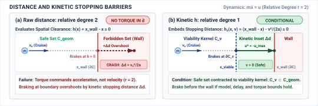

Safety Enforcement
{kind=link}
Purpose
How does an unprivileged software proposal become physical torque, and what lets the gatekeeper refuse it in time under the stated plant and timing limits?
A policy can propose commands exceeding the machine’s clearance or actuator capacity. Once that command becomes motor current, diagnosing the model’s mistake cannot undo the resulting motion. An independent enforcement path must evaluate proposals before they reach the actuators and retain the authority to reject them within a bounded time. Timely refusal is insufficient. The replacement command must also produce the intended physical response. A brake that has reached its current limit cannot deliver additional force because the safety calculation assumes it can. Enforcement therefore depends on measured state and on the tracking error of the feedback loops beneath it. When those conditions no longer support the requested motion, the machine needs a fallback whose limits are explicit. The nervous system combines permission and execution, linking the brain’s proposed behavior to the body’s tracking and stopping capabilities.
Learning Objectives
- Explain the relationship between tracking accuracy, command permission, and independent enforcement at the actuator boundary
- Diagnose how update rate, feedback delay, and actuator saturation limit corrective control
- Calculate stopping margins accounting for state uncertainty, tracking error, response delay, and available braking
- Evaluate when measured safety constraints require accepting, modifying, or refusing a proposed actuator command
- Select fallback responses when sensing, computation, or actuator limits invalidate normal enforcement
The Deterministic Gatekeeper
High-capacity learned neural policies—vision-language-action foundation models, deep reinforcement learning agents, and trajectory diffusion networks—excel at open-ended manipulation and adaptive navigation in unmodeled environments. Even when an upstream deliberative brain synthesizes smooth splines to guide the robot, candidate trajectories remain unprivileged proposals across the causal boundary. Neural policies are fundamentally unverified, non-deterministic optimizers. They can hallucinate infeasible paths, mistake specular reflections for open corridors, or emit joint commands that exceed mechanical torque limits. In standard software engineering, an algorithmic bug or invalid pointer can be trapped by a kernel exception handler or contained inside an application sandbox. In physical AI, software isolation alone is useless once motion begins. The instant a digital command triggers pulse-width modulation (PWM) switching in a motor inverter, electrical current energizes stator windings, generating magnetic flux that accelerates physical mass. At that point, software diagnosis is powerless: momentum cannot be trapped by an exception handler, and kinetic energy cannot be recalled once released into the physical plant.
The central dilemma of physical AI systems engineering is reconciling two irreconcilable realities: How do we harness the task intelligence of stochastic neural policies while ensuring the physical machine never breaches geometric clearance, thermal limits, or human safety invariants?
Solving this dilemma requires stepping across the proposal-permission boundary from Layer 3 (The Cognitive Brain) down to Layer 2 (The Deterministic Nervous System), as highlighted in figure 1. The reflex enforcer is the physical gatekeeper of the machine: an edge-deployed, hard real-time component positioned directly in front of the actuator drive electronics. It evaluates candidate proposals, verifies invariant state bounds, and holds the exclusive, irrevocable hardware authority to permit current flow or command autonomous fallback braking.
![Diagram titled Physical AI Systems Architecture Stack, drawn as four stacked tiers. Layer 4 is system governance and assurance at 0.1 to 1 hertz, holding boxes for shared autonomy, verification, safety cases, and frontier limits. Layer 3 is the brain, a cognitive deliberation tier at 1 to 50 hertz, holding five stages named ingestion, perception, memory, intent, and planner. A dashed proposal-permission privilege boundary separates it from layer 2, the nervous system, a real-time safety and timing tier at 1000 hertz. Layer 1 is the physical body and continuous plant. Layer 2 is shaded and its 1 kilohertz reflex enforcer box is outlined; the badge reads Active Focus, Chapter 12, Runtime Enforcement.](images/svg/fig_locator.svg)
Definition 0.1: Reflex enforcer
Reflex enforcer is an edge-deployed deterministic gatekeeper positioned between unverified deliberative software proposals and physical actuator drive electronics, executing at a rate chosen from plant dynamics to check validated state and torque constraints, project feasible proposals, and command a state-matched fallback when the tracking contract fails.
- Significance: Physical momentum and actuator saturation make late software intervention catastrophic. An independent permission path at the drive interface can reject uninspected commands; its actual braking response must be tested.
- Distinction: Unlike high-level trajectory planners that optimize multi-step paths over hundreds of milliseconds, a reflex enforcer performs instantaneous, single-step feasibility checks and projections under strict sub-millisecond execution deadlines.
- Common pitfall: Treating the enforcer as an emergency exception handler invoked only during crashes. In practice, the enforcer is a continuous, per-tick gatekeeper; if its state estimate or execution deadline leaves the validated envelope, it must transfer to a feasible fallback before the reserved stopping margin is consumed.
↰ Prerequisite: The dual-brain proposal-permission privilege split was established in The Dual-Brain Architecture.
This division creates an asymmetric authority relationship between the brain and the nervous system, formalized in systems engineering as the Simplex architecture pattern1 (Sha 2001). Upstream neural policies emit candidate control proposals across time-bounded intent leases (The Intent Lease). But only the nervous system, executing on bare-metal microcontroller hardware directly wired to motor drives and joint encoders, possesses the physical authority to turn a proposal into mechanical force. In the illustrated design, the enforcer evaluates incoming setpoints each millisecond control cycle against validated constraints using Control Barrier Functions (CBFs)2 (Ames et al. 2019). When a proposal is safe, it passes to the motor drives unaltered. When a proposal marginally threatens a boundary, an active-set Quadratic Program (CBF-QP) minimally modifies the command, minimizing torque deviation while enforcing the derived constraint under the stated model and timing assumptions.3 When a proposal is structurally invalid or the cognitive brain falls silent, the gatekeeper severs the command channel and triggers an autonomous fallback deceleration sequence.
However, an enforcer cannot guarantee safety beyond the physical tracking fidelity of the control loop beneath it. Every mathematical barrier certificate assumes that the closed-loop tracking controller follows commanded references within a bounded error. The enforcer consumes a single foundational contract from the controller: an explicit bound on the worst-case tracking error (\(\epsilon_{\text{track}}\)) between where the machine was commanded to be and where its physical mass actually resides. Every geometric clearance and dynamic velocity ceiling evaluated by the enforcer must be strictly inset by this error bound plus transport lag displacement.
Constructing this deterministic protective shield requires establishing the exact contractual boundaries between continuous tracking controllers, optimization-based safety filters, and bare-metal fallback actuators. The system cannot enforce safety in the abstract; it must ground barrier certificates in the verified tracking error and transport lag of the physical plant, structure asymmetric authority to reject ungrounded neural proposals, and position dual-stage filters across application processors and real-time silicon. When finite actuator torque and dynamic traps contract the admissible state space, minimal-intervention quadratic programs project candidate actions onto forward-invariant safe sets or cascade down an escalation ladder to bring kinetic energy safely to zero.
The first quantity the enforcer needs is the tracking error that remains after a permitted command reaches the physical plant.
What Control Hands Over
The tracking contract isolates the enforcer from the plant’s internal mechanics. A feedback controller makes many internal guarantees, but only one critical metric passes upward across the systems interface. Within a validated envelope of reference acceleration, load, temperature, and disturbance, the controller may provide a transient bound \(\|x(t) - r(t)\| \le \epsilon_{\text{track}}\) over the complete maneuver. The enforcer does not inspect transfer functions, root loci, or proportional-integral-derivative (PID) gains. To the software sitting above the loop, the controller is a black box that turns reference setpoints into physical motion, guaranteed to stay within the error bound \(\epsilon_{\text{track}}\) of the commanded path.
This bound is a physical distance, not a mathematical abstraction. A physical plant is governed by rotor inertia, transmission compliance, and actuator torque limits. The steady-state position error—the persistent physical gap between the commanded destination and the actual resting place—balances unmodeled external disturbances against the restoring control effort of the closed-loop stiffness. A steady-state stiffness calculation alone does not bound transient overshoot or settling; the required bound also needs validated dynamics or full-maneuver testing.4
Consider an analytical example of a linear positioning stage operating in an environment where friction and payload variations introduce disturbance forces. If the maximum theoretical disturbance translates to a steady-state error of \(5.0\text{ mm}\), and the reference command executes a step of \(100.0\text{ mm}\), the carriage accelerates and eventually settles. The settled position alone does not bound its transient excursion. At steady state, the physical carriage does not sit precisely at \(100.0\text{ mm}\). It rests anywhere within the interval \([95.0\text{ mm}, 105.0\text{ mm}]\).
The steady-state calculation does not establish a transient bound. For the following clearance example, separately assume full-maneuver validation establishes \(\epsilon_{\text{track}}=5.0\text{ mm}\) within defined operating conditions; this numerical equality with the settled error is an additional scenario assumption. The controller can provide that bound only under the validated reference, load, and thermal conditions. First, the reference trajectory cannot demand accelerations beyond what the actuators can deliver. Second, external disturbances must remain strictly below \(d_{\text{max}}\). Third, the actuator must operate below the continuous thermal derating limits established in Thermal Duty Cycles (governed by Joule heating) and voltage bus rails. If an upstream policy commands a trajectory that demands an acceleration of \(15.0\text{ m/s}^2\) from an actuator whose peak torque caps acceleration at \(10.0\text{ m/s}^2\), the feedback loop saturates. The integrator winds up, phase lag accumulates, and the physical mechanism falls behind the reference by an amount that grows with every millisecond of saturation. If an unexpected external load exceeds the validated disturbance envelope, the controller can leave the assumed \(\pm 5.0\text{ mm}\) transient corridor. Outside its rated envelope, the controller provides no bound at all.
Because physical reality can diverge from the reference command by up to \(\epsilon_{\text{track}}\), every geometric and dynamic margin evaluated by an enforcer must be inset by that exact distance. If a robot arm must maintain a physical clearance of at least \(20.0\text{ mm}\) from a fragile fixture, and the underlying tracking loop has separately established a full-maneuver bound \(\epsilon_{\text{track}} = 5.0\text{ mm}\) for this operating envelope, the enforcer cannot evaluate safety against the nominal geometry. It must inset the admissible state space by adding a virtual buffer of \(5.0\text{ mm}\), checking that the commanded reference maintains a clearance of at least \(25.0\text{ mm}\) from the obstacle surface. Compounding tracking error, transport delay displacement, and state estimation residual yields the composite inset margin invariant: \[\delta_{\text{margin}} \ge \epsilon_{\text{track}} + v \cdot \tau_{\text{delay}} + \epsilon_{\text{est}} \tag{1}\] As formalized in equation 1, if worn bearings, thermal expansion, or altered motor parameters loosen the true tracking error from \(5.0\text{ mm}\) to \(12.0\text{ mm}\) without the enforcer updating its internal model, the true physical clearance to the fixture shrinks from \(20.0\text{ mm}\) to \(13.0\text{ mm}\). The enforcer believes it is operating with a comfortable safety margin while the physical hardware moves dangerously close to collision. A degraded tracking bound silently erodes safety margins across the entire software stack.
↰ Prerequisite: Spatial clearance insetting from sensor covariance and transport delay originates in Spatial Error and Clearance Bounds.
A tracking bound never checked at runtime is an assumption, not a contract. Because environmental conditions fluctuate and mechanical components degrade, the nervous system must publish \(\epsilon_{\text{track}}\) alongside the explicit operational conditions that validate it, while monitoring the instantaneous tracking error \(e(t) = \|x(t) - r(t)\|\) on every tick of the control cycle. If sensor feedback reveals that \(e(t)\) approaches or exceeds \(\epsilon_{\text{track}}\), the tracking contract has broken. When a disturbance force spikes to \(40.0\text{ N}\) or an actuator enters thermal throttling, the nervous system cannot treat the resulting divergence as a normal transient. It must detect the contract violation immediately, invalidating the spatial assumptions used by downstream filters before unmodeled deflection causes physical damage.
Systems Perspective 0.1: The inset margin invariant
The mathematical synthesis of tracking controllers, observer design, and disturbance rejection proofs are treated in depth by the control literature (Slotine and Li 1991; Åström and Murray 2021). For the systems engineer building physical AI architectures, the responsibility begins where control guarantees end. The tracking controller provides the mechanism to translate permitted references into physical currents, but it has no semantic awareness of obstacles, task goals, or system-level hazards. It will execute a command into a solid wall with the same closed-loop fidelity that it brings to free-space motion. Before any proposed action is handed to this tracking machinery, the system must determine whether the proposal is permitted to become force at all.
Where the Enforcer Sits
The enforcer sits at a specific physical and logical boundary in the signal pipeline, determined by the dynamics’ timescale and the latencies of the feeding channels. Two natural boundaries exist in every machine that translates learned proposals into motion. One boundary sits upstream of the feedback control loop, where the system executes reference checking. A reference checker validates planned trajectory waypoints, coordinate targets, or velocity vectors emitted by a high-level planner before those targets enter the tracking loop. Because it operates in kinematic space over a forward horizon, a kinematic reference checker operating at \(50\text{ Hz}\) can evaluate a \(300\text{ ms}\) trajectory segment against static geometric envelopes, workspace boundaries, and self-collision models. The strength of reference checking is wide spatial foresight, but its fundamental limitation is complete blindness to the actual physical state of the plant. If a planned path maintains a clearance of \(5.0\text{ mm}\) from a steel bracket, the reference checker marks the command valid. Yet if the downstream tracking controller exhibits a transient position overshoot of \(10.0\text{ mm}\) when accelerating a heavy load, the physical arm strikes the bracket despite passing every upstream validation step.
↳ Downstream: Heterogeneous silicon partitioning of the reflex enforcer onto isolated microcontroller enclaves is mapped in Two Paths on One Die.
The second boundary sits downstream of the feedback controller, near the power electronics, where the system executes command checking. A command checker inspects the raw physical quantities produced by the tracking loop, evaluating motor phase currents, hydraulic valve spool displacements, pulse-width modulation duty cycles, and joint torque references immediately before writing them to hardware registers. Operating at a plant-derived inner-loop frequency, illustrated here by \(1000\text{ Hz}\), the command checker enforces hard instantaneous limits. It prevents electrical overcurrent, structural over-torque, and thermal runaway by clipping or zeroing signals that exceed the physical ratings of the plant. What the command checker gains in physical certainty, it surrenders in temporal foresight. A scalar command clamp lacks future-state information; a kinetic barrier at the same tick can use a validated stopping model. An instantaneous torque command of \(18\text{ N}\cdot\text{m}\), which is well within a thermal continuous rating of \(45\text{ N}\cdot\text{m}\), appears entirely safe to a post-control monitor. However, if that torque accelerates a \(10\text{ kg}\cdot\text{m}^2\) linkage toward a rigid stop at \(1.5\text{ rad/s}\), the rotational kinetic energy of the mechanism will exceed the maximum deceleration capacity of the actuator over the remaining travel distance. The command checker detects no fault until the linkage is inches from impact, at which point no allowable reverse torque can prevent a collision.
This split reveals the trade-off between latency and visibility. Reference checkers possess multi-step geometric visibility but suffer from high latency and blind spots regarding closed-loop tracking dynamics. In this example, operating at planning rates between \(10\text{ Hz}\) and \(50\text{ Hz}\), a reference filter cannot respond to unmodeled plant resonance, sensor noise amplification, or sudden control instability occurring at frequencies above its update rate. If a feedback controller develops a \(60\text{ Hz}\) limit cycle oscillation, the reference setpoints remain stationary while the physical linkages shake. Conversely, command checkers can run each millisecond tick with a separately measured input-to-output delay, but their one-step horizon creates dynamic traps where every instantaneous torque is legal until an irrecoverable state is reached.
The placement of the enforcer also determines how it integrates into the computing fabric. In a sequential in-line architecture, every signal passes synchronously through the enforcement logic before reaching the next stage. A reference checker filters the trajectory before the controller reads it, or a command clamp modifies the torque register before the motor drive samples it. Sequential execution guarantees zero uninspected commands, but it inserts the worst-case execution time of the enforcer directly into the critical latency path. For a digital \(1000\text{ Hz}\) control loop with a total deadline of \(1000\,\mu\text{s}\), allocating a \(P_{99}\) latency of \(250\,\mu\text{s}\) to an in-line safety check shrinks the budget available for feedback computation. If the enforcer overruns its execution budget, the entire cycle faults. In a parallel asynchronous architecture, the enforcer executes on a separate co-processor or an isolated processor core, monitoring the state of the machine and the command stream concurrently without intercepting every cycle. When the parallel monitor detects an invariant violation, it asserts a hardware line to open a safety contactor (physically severing high-voltage power to the actuators) or switch the motor drive to dynamic braking (shorting the motor phases to rapidly dissipate kinetic energy). Parallel execution preserves control loop timing, but the asynchronous detection and communication introduce an enforcement lag bounded by the monitor cycle time and bus jitter, with empirical EtherCAT measurements showing \(3.0\text{ ms}\) to \(8.0\text{ ms}\) of communication transport lag. To compensate for this reaction delay, the system designer must expand the physical safety margins, slowing the machine or increasing its minimum clearance buffers.
Because neither single location provides both dynamic foresight and instantaneous protection, physical AI architectures resolve the tension through a dual-stage enforcement pattern. This pattern maps cleanly onto the heterogeneous dual-brain System-on-Chip (SoC) architecture (The Embodied Brain):
- Upstream Stage (Pre-Control Corridor Filter on Application MPU): Operating at \(20\text{--}50\text{ Hz}\) on an unprivileged application microprocessor core, this stage accepts multi-step trajectory chunks emitted by the learned policy. It verifies that the planned path maintains a dynamic stopping corridor under worst-case braking parameters and validates geometric clearance against static workspace envelopes before packing the waypoints into an RPMSG intent lease.
- Downstream Stage (Instantaneous CBF-QP Safety Shield on Bare-Metal MCU): Operating inside a strict \(1000\text{ Hz}\) (\(1000\,\mu\text{s}\)) timer interrupt loop on an isolated hard real-time safety microcontroller, this stage receives the proposed setpoint from shared SRAM, verifies tracking error bounds, solves an active-set Control Barrier Function (CBF-QP) quadratic program in pre-allocated static SRAM, and clamps raw current and torque commands directly before writing to PWM timer registers. Because a velocity-dependent stopping barrier can yield a linear torque inequality \(\mathbf{a}(\mathbf{x})^\top \mathbf{u} \le b(\mathbf{x})\) under the stated approach dynamics, this safety check reduces to a single-step convex projection whose execution time must be bounded on the selected hardware.
The pre-control stage checks that a feasible stop remains from admitted states. The drive-side stage checks current observations and commands, but neither stage can recover a state that has already exhausted braking clearance.
Placing the enforcer correctly is useless if its inputs share failure modes with the component it checks. An enforcer may only evaluate quantities that it can establish independently of the proposal path. If a pre-control corridor filter calculates collision distances using a depth map generated by the same neural perception model that planned the motion, an out-of-distribution visual artifact will deceive both the planner and the enforcer simultaneously. Independent enforcement requires independent sensing and isolated computation. On heterogeneous dual-brain SoCs and industrial robotics controllers, the bare-metal safety MCU reads secondary optical encoders and hardware limit switches wired directly to its own GPIO and hardware timer capture registers over dedicated buses, completely isolated from the Linux virtual memory space and operating system scheduler. A collision enforcer must read dedicated safety lidar or ultrasonic proximity sensors whose signal conditioning relies on deterministic threshold logic rather than learned inference. Where no physically independent sensor exists, such as when estimating the friction coefficient of a wet roadway or the variable mass of an unmodeled payload, the systems engineer cannot construct an independent physical guarantee. In those operating regimes, the safety assertion is conditional, its validity bounded by the statistical uncertainty of the learned estimator rather than guaranteed by the nervous system. Every invariant that the enforcer checks, whether evaluated upstream across a geometric corridor or downstream at the motor terminals, ultimately assumes that the physical plant retains the control authority to arrest its own motion before crossing a forbidden boundary.
Systems Perspective 0.2: The Simplex independence rule
Checkpoint 0.1: Zero-jitter enforcement boundaries and hardware trip paths
Keep the independent permission and trip paths within verified execution and response deadlines; a preemptible application scheduler cannot own the final actuator permission decision.
Stopping Envelopes
The stopping envelope is the set of states from which a validated braking response can arrest motion before a boundary. Reserving that response costs achievable speed: velocity increases reaction travel linearly and braking travel quadratically. The machine must remain inside this viable envelope before a fault or unsafe proposal occurs.
The stopping envelope geometry derives from Newtonian kinematics and the nervous system’s signal latency. Consider a body moving along a single axis at instantaneous velocity \(v\). When an enforcer detects a boundary violation or receives an unsafe proposal, a finite transport delay \(\tau_{\text{delay}}\) elapses before actuators can generate opposing force. This total delay compounds perception exposure time, transport latency over the internal communications bus (e.g., EtherCAT bus jitter, which introduces slight variations in message delivery time), enforcer evaluation cycle time, and the physical current rise time (\(L/R\) time constant) in the stator windings (The Five Physical Budgets). During \(\tau_{\text{delay}}\), the body continues to travel under its pre-existing velocity, traversing a reaction distance of \(v \cdot \tau_{\text{delay}}\). Once braking torque engages, assuming a validated lower bound on available deceleration \(a_{\text{max}}\) within the stated operating envelope, the time required to arrest the remaining velocity is \(v / a_{\text{max}}\), during which the body traverses a braking distance of \(v^2 / (2 a_{\text{max}})\).
A pure kinematic calculation assumes that the underlying feedback controller tracks the reference trajectory with zero error. By physical AI first principles, a real physical plant diverges from the reference trajectory due to external disturbances, unmodeled joint friction, and the sensor quantization limits (Measurement Freshness). This instantaneous tracking error is bounded by \(\epsilon_{\text{track}}\) (section 2). If an obstacle sits at a coordinate \(x_{\text{obs}}\), placing the nominal stopping target exactly at \(x_{\text{obs}}\) causes a collision whenever the tracking error reaches its positive bound. The enforcer must therefore inset the allowable reference boundary away from the obstacle by \(\epsilon_{\text{track}}\). Combining reaction displacement during transport lag, active braking deceleration, and the low-level tracking error bound yields the fundamental stopping envelope invariant:8 \[d_{\text{stop}}(v) = v \tau_{\text{delay}} + \frac{v^2}{2 a_{\max}} + \epsilon_{\text{track}} + \epsilon_{\text{est}} \tag{2}\]
Under those delay, estimate, and braking assumptions, any trajectory proposal that places the machine at a distance less than \(d_{\text{stop}}(v)\) in equation 2 from a physical constraint along the direction of motion is unsafe and physically inadmissible. The stopping envelope is fundamentally anisotropic; an obstacle behind the instantaneous velocity vector requires clearance only for the positional tracking error \(\epsilon_{\text{track}}\).
Consider an analytical example of an autonomous mobile robot (AMR) navigating an industrial facility with an onboard safety LiDAR sensor offering a clear detection horizon \(d_{\text{sense}} = 2.50\text{ m}\). The nervous system exhibits a total command transport and electrical rise delay \(\tau_{\text{delay}} = 50\text{ ms} = 0.050\text{ s}\) (accounting for sensor ingress, fieldbus packet exchange, safety filter solve, and motor inverter rise time). Within the declared load and surface envelope, the chassis braking system provides a validated minimum available deceleration \(a_{\max} = 2.50\text{ m/s}^2\), and the low-level tracking controller provides a validated transient error bound \(\epsilon_{\text{track}} = 40\text{ mm} = 0.040\text{ m}\). This idealized worked calculation takes the additional position-estimate bound \(\epsilon_{\text{est}}=0\); a nonzero bound subtracts directly from available clearance. The deceleration is a lower bound on achievable braking in this scenario, not a motor nameplate maximum.
At a nominal cruising speed \(v_1 = 1.20\text{ m/s}\), the reaction drift distance during transport lag is \(d_{\text{react}} = v_1 \tau_{\text{delay}} = (1.20\text{ m/s})(0.050\text{ s}) = 0.060\text{ m} = 60\text{ mm}\). The active braking distance is \(d_{\text{brake}} = v_1^2 / (2 a_{\max}) = (1.20\text{ m/s})^2 / (2 \times 2.50\text{ m/s}^2) = 0.288\text{ m} = 288\text{ mm}\). Summing these with the tracking margin yields a total required stopping clearance of \(d_{\text{stop}}(1.20) = 0.060\text{ m} + 0.288\text{ m} + 0.040\text{ m} = 0.388\text{ m} = 388\text{ mm}\).
If an optimization policy doubles vehicle velocity to \(v_2 = 2.40\text{ m/s}\) to increase warehouse throughput, the reaction drift expands linearly to \(d_{\text{react}} = (2.40)(0.050) = 0.120\text{ m} = 120\text{ mm}\), while the active braking distance quadruples to \(d_{\text{brake}} = (2.40)^2 / (2 \times 2.50) = 1.152\text{ m} = 1152\text{ mm}\). Under the same zero-additional-estimate assumption, the total required stopping clearance surges to \(d_{\text{stop}}(2.40) = 0.120\text{ m} + 1.152\text{ m} + 0.040\text{ m} = 1.312\text{ m} = 1312\text{ mm}\). While velocity increased by 100 percent (\(2.0\times\)), the required stopping clearance expanded by 238 percent (\(3.38\times\)), demonstrating how the quadratic scaling of kinetic braking energy (\(E_k \propto v^2\)) dominates spatial clearance demands.
{kind=link}
Doubling velocity quadruples braking distance, burning completely through the blind-corner clearance envelope.
Furthermore, if the robot approaches a blind warehouse rack aisle where structural shelving limits the unobstructed sightline to \(d_{\text{corner}} = 1.20\text{ m}\), the stopping envelope constraint from equation 2 requires: \[\frac{1}{2 a_{\max}} v^2 + \tau_{\text{delay}} v + (\epsilon_{\text{track}} - d_{\text{corner}}) \le 0\] Substituting the physical parameters yields \(0.20 v^2 + 0.050 v - 1.160 \le 0\), which solves to a positive quadratic root of \(v_{\text{roofline}} \approx 2.29\text{ m/s}\). Regardless of neural inference throughput, the kinematic roofline imposes a hard velocity ceiling of \(v \le 2.29\text{ m/s}\). Any policy requesting higher speed around the blind corner violates the forward-invariant stopping contract and must be vetoed by the enforcer. For an AMR, a risk-assessed protective-field design may use a safety scanner under the applicable vehicle and machinery standards, including ISO 3691-4 and ISO 13849, such as the time-of-flight safety laser scanner shown in figure 2.
{kind=link}
{kind=link}
The physical necessity of maintaining a clear stopping envelope levies an inevitable tax on operational throughput. In a state-space phase portrait plotting velocity against distance to the nearest obstacle (figure 3), the stopping equation defines a parabolic boundary separating safe operation from inescapable collision. The margin between the physical obstacle boundary and the certified envelope represents the spatial budget consumed by perception delay, transport lag, and tracking error before peak braking engages. In any deployment where sensing range is finite or environmental visibility is restricted by geometry, the maximum detection horizon \(d_{\text{sense}}\) dictates a hard ceiling on legal velocity. Just as the Patterson Roofline model (Williams et al. 2009) in computer architecture relates peak compute performance to memory bandwidth limits, the stopping envelope dictates a strict kinematic roofline: if an onboard optical sensor can confirm an unobstructed corridor only up to \(2.0\text{ m}\) ahead around a blind warehouse corner, the system cannot permit a speed exceeding \(3.01\text{ m/s}\) (or \(2.68\text{ m/s}\) for a \(1.61\text{ m}\) sightline) under the parameters of the earlier example, regardless of how quickly the underlying machine learning model can compute actions. To run faster, the engineer must either increase braking torque \(a_{\text{max}}\), compress signal latency \(\tau_{\text{delay}}\), or tighten the tracking error \(\epsilon_{\text{track}}\) through higher loop gains. When hardware limits prevent further reduction in those terms, the only remaining parameter is velocity.
Checkpoint 0.2: Stopping envelopes and transport lag
Consider how the stopping envelope dictates the boundaries of permissible autonomous motion:
The parameters governing the stopping envelope are rarely stationary during physical operation. When a robotic manipulator grasps an unmodeled \(15\text{ kg}\) steel billet, the combined inertia of the arm increases, reducing the maximum angular deceleration \(a_{\text{max}}\) that joint actuators can produce without exceeding their peak mechanical torque ratings. Similarly, on a mobile robot, moisture or oil on a concrete floor reduces the tire friction coefficient, lowering the maximum tractive deceleration before wheel slip occurs and widening the tracking error \(\epsilon_{\text{track}}\). Repeated hard decelerations also drive up rotor and inverter temperatures (Joule heating via \(I^2 R\) losses), triggering the actuator thermal derating limits (Thermal Duty Cycles). An enforcer that treats \(a_{\text{max}}\) as a static datasheet constant will underestimate the stopping envelope precisely when the machine is under heavy load. The enforcer must use independently bounded braking capability and reduce permitted speed when validated friction, payload, or thermal conditions change; an uncertain estimate cannot by itself restore a guarantee.
Dynamic envelope adaptation functions only as long as the enforcer possesses accurate state estimates and the actuators retain the physical capacity to supply the requested forces. If surface contamination drops effective traction to near zero, or if a sustained duty cycle pushes winding temperatures past their thermal ceilings, the deceleration capability assumed in the safety calculation evaporates. Under those conditions, the mathematical envelope expands toward infinity while the physical machine continues along its ballistic path. The moment the required deceleration torque exceeds what the physical hardware can produce, the enforcer transitions from a deterministic guardian into an impotent observer.
When the Enforcer Runs Out of Authority
In control engineering, actuator saturation is a bounded nonlinearity that introduces phase lag, degrades stability, and causes windup in feedback controllers. In the architecture of a physical AI system, saturation is more immediate and physical: it is the moment a motor is giving everything it has and simply cannot push any harder. It is the instant the permission path loses the physical capacity required to keep its safety warranty. The enforcer makes guarantees on the premise that it can interpose a corrective control action \(u_{\text{corr}}\) whenever the machine approaches a forbidden state boundary. When an actuator reaches its mechanical limit (peak torque), its electrical limit (bus voltage or current clipping), or its thermal limit (the \(I^2R\) Joule heating threshold, Thermal Duty Cycles), that corrective force cannot be delivered at the commanded magnitude. The enforcer cannot protect a boundary using force that the physical body cannot generate.
A stopping envelope computed under nominal assumptions becomes invalid as soon as authority is consumed. From first principles, actuator capacity is finite, and any authority expended to maintain steady-state motion (like climbing an incline or holding a payload against gravity) directly subtracts from the force available for emergency braking.9 Under a steady-state bias torque \(\tau_{\text{bias}}\), the effective deceleration available to arrest angular motion is: \[\alpha_{\text{eff}} = \frac{\tau_{\max} - \tau_{\text{bias}}}{J} \tag{3}\] where \(J\) is the mechanism inertia and \(\tau_{\max}\) is the peak dynamic torque limit. In linear translational systems with mass \(m\) and bias force \(u_{\text{bias}}\), equation 3 takes the equivalent form \(a_{\text{eff}} = (u_{\max} - |u_{\text{bias}}|) / m\). For example, if a mobile base requiring \(0.50\text{ m}\) to stop consumes 75 percent of its motor torque simply to maintain steady speed on an incline, only one-quarter of its force remains for braking, quadrupling its stopping distance to \(2.00\text{ m}\).
Consider an analytical example of an articulated industrial manipulator lowering a payload in a joint-level scenario at joint angular velocity \(\omega_0 = 1.20\text{ rad/s}\) toward an assembly fixture. The effective linkage length is \(\ell = 0.80\text{ m}\), the total joint inertia is \(J = 3.0\text{ kg}\cdot\text{m}^2\), and the joint motor drive provides a peak dynamic torque limit \(\tau_{\max} = 120\text{ N}\cdot\text{m}\). In horizontal free space where gravitational bias is absent (\(\tau_{\text{bias}} = 0\)), the entire peak torque is available for braking, yielding a nominal maximum angular deceleration of \(\alpha_{\text{nom}} = 120\text{ N}\cdot\text{m} / 3.0\text{ kg}\cdot\text{m}^2 = 40.0\text{ rad/s}^2\). The nominal stopping angle from \(\omega_0 = 1.20\text{ rad/s}\) is \(\Delta \theta_{\text{nom}} = \omega_0^2 / (2 \alpha_{\text{nom}}) = (1.20)^2 / (2 \times 40.0) = 0.018\text{ rad} = 1.03^\circ\), which produces a Cartesian tool-point linear stopping displacement along arc of \(d_{\text{tool,nom}} = \ell \Delta \theta_{\text{nom}} = (0.80\text{ m})(0.018\text{ rad}) = 0.0144\text{ m} = 14.4\text{ mm}\).
However, during vertical downward descent, the specified load and arm geometry produce a downward joint bias of \(\tau_{\text{bias}} = 90\text{ N}\cdot\text{m}\), consuming 75 percent of the motor’s total torque capacity. According to equation 3, the net upward torque available for emergency deceleration collapses to \(\tau_{\text{net}} = \tau_{\max} - \tau_{\text{bias}} = 120 - 90 = 30\text{ N}\cdot\text{m}\). The effective angular deceleration collapses by a factor of four to \(\alpha_{\text{eff}} = 30 / 3.0 = 10.0\text{ rad/s}^2\), causing the stopping angle to expand fourfold to \(\Delta \theta_{\text{eff}} = (1.20)^2 / (2 \times 10.0) = 0.072\text{ rad} = 4.13^\circ\). The tool stopping displacement surges to \(d_{\text{tool,eff}} = (0.80\text{ m})(0.072\text{ rad}) = 0.0576\text{ m} = 57.6\text{ mm}\), an unbudgeted overrun of \(\Delta d = 57.6\text{ mm} - 14.4\text{ mm} = 43.2\text{ mm}\). If the enforcer evaluates barrier envelopes using datasheet torque \(\tau_{\max}\) rather than net dynamic headroom \(\tau_{\max} - \tau_{\text{bias}}\), the predicted stop travels \(43.2\text{ mm}\) farther than budgeted. Whether contact occurs or causes damage depends on actual initial clearance and fixture mechanics.
When tracking controllers beneath the enforcer employ integral action, saturation introduces an additional latency penalty. If an actuator reaches its limit while tracking error \(\epsilon(t) = x_{\text{des}}(t) - x(t)\) persists, the integrator continues accumulating error, driving the internal control state far beyond the physical ceiling. Physically, the controller accumulates an unexecutable corrective command integral because the saturated plant cannot eliminate the error. When the enforcer intervenes to command full braking, the motor does not reverse force immediately. The physical output remains pinned at the forward saturation limit while this accumulated integrator error unwinds back below the clamping threshold. In an analytical example where tracking error accumulates over \(200\text{ ms}\), the integrator unwinding phase can introduce a recovery delay \(\tau_{\text{unwind}} = 150\text{ ms}\) before net negative force actually develops at the motor. At \(v_0 = 2.0\text{ m/s}\), this delay adds an unbraked coasting distance \(\Delta d_{\text{delay}} = v_0 \tau_{\text{unwind}} = 0.30\text{ m}\) directly to the stopping envelope. Control literature addresses this behavior through anti-windup clamping, back-calculation, and conditional integration (see Åström and Hägglund (2006); Franklin et al. (1998)). From the perspective of systems enforcement, the requirement is not merely to stabilize the control loop, but to measure this unwinding delay and budget its unbraked distance penalty inside the forward stopping horizon.
Actuator saturation is one of the few hardware failures with a direct, deterministic detector inside the nervous system. At each execution cycle of the motor tracking loop, typically running at \(1000\text{ Hz}\) (\(1\text{ ms}\) tick interval), the nervous system compares the commanded effort \(u_{\text{cmd}}\) with the realizable actuator limit \(u_{\text{act}} = \text{clip}(u_{\text{cmd}}, u_{\text{min}}, u_{\text{max}})\). A nonzero clipping difference, \(|u_{\text{cmd}} - u_{\text{act}}| > 0\)—meaning the software requested more torque than the hardware could physically deliver—or an inverter status register indicating current limit saturation, provides an immediate signal that the actuator has exhausted its authority. By tracking the duration and magnitude of this clamping signal, the nervous system monitors available control authority on every millisecond tick without relying on noisy external state estimation.
Because authority consumption alters stopping distance immediately, the enforcer cannot treat actuator limits as static parameters in an offline calculation. Instead, the nervous system must fold real-time authority consumption directly into the stopping envelope. When an actuator allocates baseline torque \(u_{\text{bias}}\) to hold a payload against gravity or overcome an opposing grade, the enforcer recalculates effective deceleration as \(a_{\text{eff}} = (u_{\text{max}} - |u_{\text{bias}}|) / m\) before verifying the next trajectory segment. As authority is consumed, the allowable speed ceiling decreases continuously. If authority depletion causes the calculated stopping distance to exceed the clear sensing horizon, the system reaches an authority deficit. The enforcer cannot allow the machine to maintain its speed. It must command deceleration while sufficient physical authority still remains.
Authority depletion is state information that must be exported upstream to the planner. A learned policy operating at \(20\text{ Hz}\) that continues commanding accelerations to a motor saturated at \(1000\text{ Hz}\) operates completely divorced from physical reality. If the planner does not receive saturation feedback, it will continue generating trajectories based on acceleration profiles the body cannot execute, rapidly widening the divergence between the model’s expected state and the machine’s true physical state. The nervous system communicates saturation events to the policy layer as an active constraint violation. When an authority alarm triggers, the planner’s active trajectory is revoked, requiring the model to re-plan from the machine’s true, authority-constrained state.
Every dynamic stopping envelope and safety margin depends on the physical capacity of the machine to generate corrective force within the remaining distance. When that capacity is restricted by load, grade, or thermal derating, the space of executable safe trajectories contracts. An enforcer cannot verify safety simply by checking whether the current state is collision-free. It must confirm that the current state permits an executable sequence of future control actions that terminate safely under the actuator authority that actually exists.
Checkpoint 0.3: Actuator headroom and barrier contraction

Consider how steady-state gravitational and external loads reshape actuator control authority:
Safe Sets as Conditional Permission
A safe set gives the enforcer a concrete predicate that can be evaluated on every tick of the control clock. In control theory, a safe set \(\mathcal{C}\) is defined as the zero-superlevel set of a continuously differentiable scalar certificate \(h(x): \mathcal{X} \to \mathbb{R}\), such that \[\mathcal{C} = \{x \in \mathcal{X} \mid h(x) \ge 0\}, \quad \partial \mathcal{C} = \{x \in \mathcal{X} \mid h(x) = 0\}.\] The mathematical foundation of forward invariance, established by Blanchini (Blanchini 1999), formulated through Hamilton-Jacobi reachability analysis and viability kernels by Mitchell, Bayen, and Tomlin (Mitchell et al. 2005), and extended through Control Barrier Functions by Ames et al. (2014) and Ames et al. (2019),10 characterizes conditions under which an admissible controller can keep a state within a viable set. Geometric clearance alone is not that set when stopping torque is finite.
Napkin Math 0.1: Forward invariance and safety boundaries
By constraining the temporal derivative of the barrier function along the system vector fields, the nonlinear dynamics of the physical plant collapse into an instantaneous linear inequality constraint on actuator torque. If the barrier inequality remains feasible and the model, sensing, actuation, and timing bounds hold, this condition supports forward invariance from an initially viable state.
For formal mathematical derivations of Control Barrier Functions, Lie derivatives, and Nagumo’s viability theorem, see Control and Dynamics.
Definition 0.2: Control barrier function (CBF-QP)
Control barrier function safety filter (CBF-QP) is a conditional safety filter that projects a proposed input through a bounded convex quadratic program: \[\min_{\mathbf{u}} \frac{1}{2}\|\mathbf{u} - \mathbf{u}_{\text{nom}}\|^2 \quad \text{s.t.} \quad \mathbf{a}(\mathbf{x})^\top \mathbf{u} \le b(\mathbf{x}), \quad \mathbf{u}_{\min} \le \mathbf{u} \le \mathbf{u}_{\max}\] that projects unverified learned proposals \(\mathbf{u}_{\text{nom}}\) onto linear braking constraints (\(\mathbf{a}(\mathbf{x})^\top \mathbf{u} \le b(\mathbf{x})\)), leaving candidates that satisfy the current torque half-space untouched and projecting candidates that violate it, even while the state remains inside the viable region.
- Significance: Rather than attempting the impossible task of proving formal safety across billions of uninterpretable neural network weights, a CBF-QP filter decouples high-level policy innovation from low-level safety enforcement. The learned model is free to explore complex manipulation or navigation strategies, while the deterministic enforcer can preserve a validated viable set while its physical assumptions remain true.
- Distinction: Unlike a heuristic clamp that saturates control channels independently (destroying multi-axis coordination), a CBF-QP filter performs an optimal orthogonal projection in control space, minimizing the chosen torque-space distance; it does not automatically preserve a Cartesian path.
- Common pitfall: Formulating barrier constraints using raw geometric coordinates without accounting for relative degree or braking inertia. If the barrier does not incorporate stopping distance (\(\Delta d = v^2 / 2a_{\max}\)), the filter intervenes too late, after the vehicle’s momentum has already made a boundary collision inevitable.
When a learned neural policy proposes an unverified action \(\mathbf{u}_{\text{nom}}\), the enforcer does not need to forecast the entire future path of the machine. It evaluates a single half-space inequality—a linear constraint representing the maximum safe approach speed toward the boundary—at the current state \(\mathbf{x}\). If the proposed action satisfies this constraint, mathematically expressed as \(\mathbf{a}(\mathbf{x})^\top \mathbf{u}_{\text{nom}} \le b(\mathbf{x})\), the enforcer passes the command to the motor untouched. If the proposed action violates a feasible half-space, the enforcer projects its torque vector. The resulting plant path still depends on coupled dynamics and tracking.
The MCU evaluates this barrier on sampled cycles; the admission margin must cover intersample travel and measured sensing-to-torque delay. Consider a heavy cart moving down a track toward a wall. If the enforcer only looks at the distance to the wall, it realizes there is a problem too late—when the cart is already too close to stop given its current momentum.11 Instead, the enforcer’s safety barrier must factor in both the cart’s position and its kinetic stopping distance (\(v^2 / 2 a_{\max}\)).
This dynamic exposes the foundational physical concept of relative degree. The physical problem is that actuators command electrical current and torque, not velocity or position. Torque produces acceleration (\(F = ma\)). As a result, position is separated from the commanded control input by two time integrals: \[\text{Actuation } u \xrightarrow{\int \frac{1}{m} dt} \text{Velocity } v \xrightarrow{\int dt} \text{Position } x\] This two-step integration cascade defines relative degree \(r = 2\). If an enforcer monitors only geometric distance without accounting for kinetic energy, actuator braking cannot overcome physical inertia once the stopping envelope is breached. Differentiating clearance once with respect to time yields velocity: \[\dot{d} = -v\] At this first derivative, the actuator control input \(u\) (motor torque or phase current) has not yet appeared, because an electric motor cannot produce an instantaneous step change in physical velocity. Only when clearance is differentiated a second time does Newton’s second law (\(m \ddot{x} = u - d_{\text{ext}}\)) enter the physical dynamics: \[\ddot{d} = -\dot{v} = -\left( \frac{u - d_{\text{ext}}}{m} \right)\] Because the commanded control input \(u\) physically appears only on the second time derivative, geometric clearance has relative degree \(r = 2\).
A raw-distance rule \(\dot d\ge-\gamma d\) cannot directly constrain this torque input: \(\dot d=-v\) contains no \(u\). For an approaching arm, let \(D=d_{\text{tool}}/\ell\) be the remaining angular clearance, \(\omega>0\) its approach speed, \(J\dot\omega=\tau+\tau_{\text{bias}}\), and \(\alpha\) a validated lower bound on available angular braking. Define the kinetic barrier \[h(D,\omega)=D-\frac{\omega^2}{2\alpha},\qquad \dot h=-\omega-\frac{\omega(\tau+\tau_{\text{bias}})}{J\alpha}. \tag{4}\] The raw distance \(D\) has relative degree two; this velocity-dependent \(h\) has relative degree one for \(\omega>0\). Requiring \(\dot h+\gamma h\ge0\) produces the actual affine torque half-space \[\tau\le-\tau_{\text{bias}}+J\alpha\left(\frac{\gamma h}{\omega}-1\right),\qquad -\tau_{\max}\le\tau\le\tau_{\max}. \tag{5}\] At standstill (\(\omega=0\)), the controller uses a separate no-approach and acceleration admission check; it does not divide by zero. Delay, estimate error, and torque-tracking error must consume additional clearance before applying this ideal continuous-time barrier.
In the loaded-arm scenario, take \(J=3\text{ kg}\cdot\text{m}^2\), \(\tau_{\text{bias}}=90\text{ N}\cdot\text{m}\) toward the fixture, \(\tau\in[-120,120]\text{ N}\cdot\text{m}\), \(\alpha=(120-90)/3=10\text{ rad/s}^2\), \(\ell=0.80\text{ m}\), \(\omega=1.2\text{ rad/s}\), and \(\gamma=10\text{ s}^{-1}\). These are stated joint-level scenario inputs; the \(90\text{ N}\cdot\text{m}\) bias is not inferred from the payload mass alone. At \(80\text{ mm}\) tool clearance, \(D=0.10\text{ rad}\) and \(h=0.028\text{ rad}\), so equation 5 permits at most -113 \(\text{N}\cdot\text{m}\). At \(57.6\text{ mm}\), \(h=0\) and the limit reaches -120 \(\text{N}\cdot\text{m}\). At \(50\text{ mm}\), it demands -122.375 \(\text{N}\cdot\text{m}\), outside the available torque interval: this state is already outside the modeled viable set. The enforcer must prevent entry into it; a fallback started there cannot restore the lost clearance. These results assume immediate torque realization, constant bias, and exact state. A deployed checker must inset the boundary for bounded response delay, measurement error, and torque-tracking deviation.
A real machine does not execute continuous, ideal forces on an uncorrupted plant. The nominal barrier assumes exact state feedback and instantaneous torque realization, but the nervous system operates subject to physical latency, including stator delays (the electromagnetic lag before current builds in the motor coils), bus jitter, and gearbox compliance (the mechanical springiness and slop in the transmission). Because of this, the enforcer cannot evaluate the barrier at the geometric edge of the safe set. It must mathematically inset the boundary to swallow the worst-case stopping deficit caused by these delays and mechanical compliances, forcing it to intervene earlier in the trajectory.
The safety warrant provided by the barrier calculation is strictly conditional. A forward-invariance claim requires a feasible barrier and the following bounded conditions; the list is necessary for this design, not an exhaustive if-and-only-if test:
- Model Fidelity: The nominal plant dynamics \(f(x)\) and \(g(x)\) must capture the true system dynamics within a certified parameter error bound.
- Disturbance Bounds: External forces and unmodeled friction acting on the mass must remain strictly within the modeled disturbance envelope \(|d(t)| \le d_{\max}\).
- Actuation Authority: Physical actuators must possess sufficient voltage, current, and thermal headroom to realize the commanded corrective force without saturation (\(u^* \in [u_{\min}, u_{\max}]\)).
- Solver Determinism: The optimization solver or projection algorithm must terminate strictly within its allocated execution budget (\(T_{\text{solve}} \le T_{\text{budget}} < T_{\text{loop}}\)).
- Discretization Invariance: The discrete sampling interval \(T_{\text{ctrl}}\) must be sufficiently small that inter-sample state drift does not breach the continuous-time invariance boundary.
Each of these five conditions maps directly to physical system budgets, separating empirical bench characterization from assumptions that the release argument must explicitly carry. Model fidelity and disturbance bounds are measured on the bench through system identification and load testing, while operational envelopes assume these bounds hold. Actuation authority is governed by dynamometer curves under continuous load and actuator thermal limits (Thermal Duty Cycles). Solver execution is governed by the latency budget of the nervous system processor, verified through static worst-case execution time analysis. Sampling interval validity is governed by the loop frequency budget, ensuring that the discrete control step \(T_{\text{ctrl}} = 1.0\text{ ms}\) limits the unobserved physical drift that occurs between sensor readings (known mathematically as zero-order hold integration error) to a fraction of the safety margin \(\delta_{\text{margin}}\).
Because a conditional guarantee whose conditions are unmonitored is an ungrounded assertion, the nervous system must attach a dedicated hardware or software detector to each condition. A disturbance observer calculates the residual between predicted acceleration and measured accelerometer data on every cycle, flagging unmodeled external forces that exceed the disturbance budget. Inverter status registers and current shunt monitors track actuator saturation, reporting when commanded torque cannot be delivered. A dedicated hardware watchdog and a high-resolution cycle counter monitor solver execution latency against the sub-millisecond deadline, transferring authority to an independently validated fallback if the core halts or misses a deadline. Timestamp counters on the sensor bus monitor communication jitter and missed sample deadlines.
When any runtime detector trips, the mathematical premise of the safe set collapses. If an actuator overheats and drops its torque limit, or if an unexpected payload disturbance exceeds the observer threshold, the enforcer cannot continue claiming that tangential projection along \(\partial \mathcal{C}\) guarantees safety. The correct system response is not to recompute the barrier with optimistic parameters, but to execute an immediate transition to a dedicated fallback mode via the Simplex switch. Triggering this pattern revokes the neural policy and requests a state-matched fallback whose response time and braking margin were reserved before the fault; later rungs may limit harm if the viable set has already been lost. The safe set provides a valid permission path only while its operating contract is intact, and the nervous system enforces safety by knowing precisely when that contract has failed.
Checkpoint 0.4: Forward invariance, Lie derivatives, and viability kernels

Before studying minimal intervention filters, verify your mathematical understanding of how forward invariance guarantees containment under worst-case plant dynamics:
A state is not safe merely because it is currently collision-free; it is safe only if there exists an executable sequence of future control actions that terminates within the admissible boundary under physical torque limits.
Minimal Intervention
The principle of minimal intervention leaves an admitted proposal unchanged when it satisfies every active constraint and changes it when projection is both needed and feasible, even while the state remains inside the viable set. Replacing the neural network’s commands with a hand-crafted conservative controller during nominal operation discards the behavioral competence justifying the learned model. Overriding a proposed action with an aggressive braking command at the first boundary encounter creates acceleration spikes, destabilizes balance, and interrupts task progress. Minimal intervention treats safety enforcement as a safety shield (projection operator). The nervous system accepts the policy’s proposal as the default intent and computes the smallest physical correction that keeps the system within the invariant set.
{kind=link}
The Act \(\cap\) Sense reflex shield: \(1\text{ kHz}\) Control Barrier Functions and hardware veto authority.
A minimal-intervention QP projection (safety shield) is a sub-millisecond convex optimization safety filter (\(\min_{\mathbf{u}} \frac{1}{2}\|\mathbf{u} - \mathbf{u}_{\text{nom}}\|^2 \text{ s.t. } \mathbf{a}(\mathbf{x})^\top \mathbf{u} \le b(\mathbf{x}), \mathbf{u}_{\min} \le \mathbf{u} \le \mathbf{u}_{\max}\)) that passes a proposal unchanged when it satisfies the current torque constraint and computes the least-squares projection when it violates that constraint, including at viable interior states; torque-space proximity alone does not preserve the task path.
↰ Prerequisite: Nominal trajectory setpoints and feedforward torques are synthesized by the planner in From Goal to Trajectory.
This safety filtering mechanism is framed as a control barrier function quadratic program (CBF-QP) (Ames et al. 2016). In standard matrix form for the real-time solver, the CBF-QP evaluates a convex filter: checking a model-derived torque half-space before the stopping margin is exhausted. At each discrete control interval \(T_{\text{ctrl}} = 1.0\text{ ms}\) on the bare-metal microcontroller, the enforcer receives a nominal torque command \(\mathbf{u}_{\text{nom}} \in \mathbb{R}^m\) from the policy mailbox and solves the convex optimization problem:12 \[\min_{\mathbf{u}} \frac{1}{2}\|\mathbf{u} - \mathbf{u}_{\text{nom}}\|^2 \quad \text{s.t.} \quad \mathbf{a}(\mathbf{x})^\top \mathbf{u} \le b(\mathbf{x}), \quad \mathbf{u}_{\min} \le \mathbf{u} \le \mathbf{u}_{\max} \tag{6}\] where \(\mathbf{a}(\mathbf{x})^\top \mathbf{u} \le b(\mathbf{x})\) represents a torque constraint derived from a velocity-dependent barrier such as equation 5,13 and \([\mathbf{u}_{\min}, \mathbf{u}_{\max}]\) represents the verified actuator torque envelope.
Napkin Math 0.2: Minimal intervention through optimization
The safety filter receives unverified candidate torques and tests them against model-derived affine constraints. A feasible proposal passes unchanged; an infeasible proposal is projected when the admissible set is nonempty. Euclidean projection minimizes torque-vector change, not Cartesian path deviation.
For a nonempty convex feasible set, the quadratic objective has a unique minimizer. A platform-specific iteration cap and measured worst-case execution bound are still needed for a hard deadline.
For a rigorous derivation of the closed-form projection and Lagrange multipliers used in the CBF-QP formulation, see Control and Dynamics.
When enforcing a single active linear barrier constraint \(\mathbf{a}^\top \mathbf{u} \le b\) in equation 6, the optimization admits an exact closed-form orthogonal projection: \[\mathbf{u}^* = \mathbf{u}_{\text{nom}} - \frac{\mathbf{a}^\top \mathbf{u}_{\text{nom}} - b}{\|\mathbf{a}\|^2} \mathbf{a} \tag{7}\] where the optimal Lagrange multiplier \(\lambda^* = (\mathbf{a}^\top \mathbf{u}_{\text{nom}} - b) / \|\mathbf{a}\|^2\) scales the minimal intervention vector \(\Delta \mathbf{u} = -\lambda^* \mathbf{a}\).
Consider an analytical example of a 2-axis robotic manipulator governed by an unconstrained neural policy proposing joint torques \(\mathbf{u}_{\text{nom}} = [\) 3.5, 3 \(]^\top\text{ N}\cdot\text{m}\). To isolate the projection arithmetic, suppose an abstract safety half-space has already been derived and validated: \(\mathbf{a}^\top \mathbf{u} \le b\) with \(\mathbf{a} = [\) 2, 1 \(]^\top\) and \(b =\) 5 \(\text{N}\cdot\text{m}\), with per-joint actuator saturation limits of \([-5.0, 5.0]\text{ N}\cdot\text{m}\). Evaluating the constraint on the candidate command yields \(\mathbf{a}^\top \mathbf{u}_{\text{nom}} = 2.0(3.5) + 1.0(3.0) =\) 10 \(\text{N}\cdot\text{m}\). Because \(10 > 5\), the policy proposal breaches the barrier boundary by \(\Delta b =\) 5 \(\text{N}\cdot\text{m}\), demanding intervention.
Applying the closed-form projection from equation 7, the optimal Lagrange multiplier is \(\lambda^* = (10 - 5) / (2^2 + 1^2) = 5 / 5 =\) 1. The minimal-intervention command is: \[\mathbf{u}^* = \begin{bmatrix} 3.5 \\ 3.0 \end{bmatrix} - 1.0 \begin{bmatrix} 2.0 \\ 1.0 \end{bmatrix} = \begin{bmatrix} 1.5 \\ 2.0 \end{bmatrix}\text{ N}\cdot\text{m}\] yielding \(\mathbf{u}^* = [\) 1.5, 2 \(]^\top\text{ N}\cdot\text{m}\). Evaluating the barrier boundary confirms \(\mathbf{a}^\top \mathbf{u}^* = 2.0(1.5) + 1.0(2.0) = 5\text{ N}\cdot\text{m}\), exactly satisfying the stipulated half-space while both joints remain well within their \([-5.0, 5.0]\text{ N}\cdot\text{m}\) limits. The intervention norm is \(\|\Delta \mathbf{u}\| = \sqrt{(-2.0)^2 + (-1.0)^2} = \sqrt{5} \approx\) 2.236 \(\text{N}\cdot\text{m}\).
The geometric necessity of this projection becomes obvious when contrasted with heuristic per-axis clamping. If an embedded controller naively clamps Joint 1 at \(2\text{ N}\cdot\text{m}\) while passing Joint 2 at \(3\text{ N}\cdot\text{m}\) (\(\mathbf{u}_{\text{clip}} = [\) 2, 3 \(]^\top\text{ N}\cdot\text{m}\)), evaluating the barrier yields \(\mathbf{a}^\top \mathbf{u}_{\text{clip}} = 2.0(2.0) + 1.0(3.0) =\) 7 \(\text{N}\cdot\text{m} > 5\text{ N}\cdot\text{m}\). The heuristic clamp fails this abstract torque constraint by 2 \(\text{N}\cdot\text{m}\). Furthermore, while the nominal command had an actuation angle of \(\theta_{\text{nom}} = \arctan(3.0/3.5) \approx\) 40.6\(^\circ\), the heuristic clamp shifts the torque vector to \(\theta_{\text{clip}} = \arctan(3.0/2.0) \approx\) 56.3\(^\circ\) (a 15.7\(^\circ\) uncoordinated skew). The clipped torque vector changes direction. The projected vector also rotates relative to the proposal, so Cartesian direction and mechanical response must be checked separately. The quadratic projection minimizes Euclidean torque change under the given constraint. Neither operation alone establishes the end-effector path; that requires a coupled plant model and trajectory check.
Figure 4 works the minimal-intervention architecture simultaneously across state space \(\mathcal{X}\) and control input space \(\mathcal{U}\). In state space (panel a), unconstrained policy proposals vectoring across the barrier into the unsafe region are deflected tangentially along the forward-invariant safe set boundary \(\partial \mathcal{C}\) inset by the tracking error margin \(\delta_{\text{margin}}\). In control space (panel b), the enforcer orthogonally projects the unconstrained command \(\mathbf{u}_{\text{nom}}\) onto the linear half-space boundary \(\mathbf{a}^\top \mathbf{u} \le b\), satisfying the illustrative half-space while the independently clamped vector violates it; neither operation alone proves a Cartesian path.
{kind=link}
Filter choice joins a mathematical condition to a measured execution budget and the machine’s available braking authority. As summarized in table 1, architectural choices vary dramatically in their handling of relative degree, solver worst-case execution time (WCET), forward invariance guarantees, and directional fidelity. Independent clamping can miss coupled constraints; a CBF-QP can enforce a derived half-space if it is feasible and finishes within the verified cycle. Predictive filters (Wabersich and Zeilinger 2021) trade a longer horizon for configuration-dependent compute cost.
| Filter | Input and condition | What it can establish | Main validation task |
|---|---|---|---|
| Independent torque clamp | Each axis checked separately | Hardware amplitude limit, not coupled stopping clearance | Test coupled wrench and stopping behavior |
| First-order CBF-QP | Barrier whose first derivative contains the input | Conditional invariance from a viable initial state | Validate model, feasible torque set, and cycle bound |
| Kinetic / higher-order barrier | Position constraint with speed and braking authority included | Conditional stopping margin before geometric contact | Bound bias torque, delay, estimate error, and discretization |
| Precomputed viable region | State-to-permitted-input lookup | Containment for the modeled region | Verify lookup coverage and interpolation |
| Predictive safety filter | Finite-horizon trajectory and terminal set | Recursive feasibility only under terminal and timing assumptions | Bound full solve time and fallback on timeout |
Operating near an active safe-set boundary can produce chattering. If a learned policy repeatedly proposes an unsafe command, sampled enforcement may switch the active constraint across successive \(1.0\text{ ms}\) ticks. Depending on the plant and controller, rapid torque changes can excite a structural mode or increase motor heating and transmission wear. A tested boundary layer or hysteresis can reduce switching, but its added tracking error must fit inside the validated stopping margin; smoothing alone does not establish invariance.
Beyond enforcing safety on each instantaneous cycle, the intervention vector \(\Delta u = u^* - u_{\text{nom}}\) provides a continuous diagnostic measurement of upstream policy health. During nominal operation within the training distribution, a well-trained policy operates inside the safe set, producing zero intervention norm across most cycles. An increase in intervention frequency or magnitude can indicate proposal drift, a changed task, or a changed plant; the signal needs diagnosis before it is used as a release decision. By tracking the cumulative intervention metric over a rolling window of \(W = 500\text{ ms}\), calculated as the discrete sum \(\sum_{k=0}^{W/\Delta t - 1} \|u_k^* - u_{\text{nom}, k}\| \Delta t\), the nervous system can flag a pattern for diagnosis while separate per-tick limits still protect the plant. When the \(P_{95}\) intervention metric over the window exceeds a predetermined threshold, the system flags policy divergence, allowing the host architecture to trigger retraining data logging or operator notification.
The conditional barrier result requires a validated control-affine plant model, bounded state and delay error, feasible actuator authority (\(\mathcal{U}_{\text{safe}} \neq \emptyset\)), and a sampled implementation whose measured tracking and execution errors fit the reserved margin. The \(10\text{ kHz}\) current loop beneath the illustrative \(1\text{ kHz}\) torque loop is one design to test; its nominal rate alone does not establish delivered-torque accuracy.
Napkin Math 0.3: Microcontroller CBF-QP execution limits
Systems Analysis: In this constructed schedule, acquisition, validation, and a typical active-set solve occupy about \(175\)–\(225\ \mu\text{s}\). That is a nominal timing illustration, not a full-cycle bound.
The qualified full path instead budgets up to \(650\ \mu\text{s}\) for the solver plus bounded acquisition, validation, write, and dispatch time within the \(1.0\text{ ms}\) cycle; a timeout transfers authority before an overrun. For a clock-cycle-accurate worst-case execution time (WCET) analysis, see Systems and Hardware.
In this illustrative heterogeneous design, the shield executes inside a \(1000\text{ Hz}\) (\(1000\,\mu\text{s}\)) timer interrupt routine on the real-time microcontroller core. The offsets below describe a nominal sequence; the separate full-cycle WCET must include every stage:
- Interrupt Entry & State Acquisition (\(0\text{--}15\,\mu\text{s}\)): Hardware timer triggers ISR; firmware reads raw optical encoder registers and ADC current shunts.
- Proposal & Lease Verification (\(15\text{--}25\,\mu\text{s}\)): The MCU inspects the shared SRAM ring buffer populated by the Linux MPU over RPMSG or shared memory. It validates the CRC32 checksum (verifying transport integrity) and authenticates the cryptographic MAC (verifying origin authenticity), confirms monotonic sequence order, and verifies that the intent lease has not expired (\(t_{\text{age}} \le 75\text{ ms}\), with renewal no more than \(60\text{ ms}\) apart). This proposal lease limits command age under the stated clock-conversion and delivery bounds. A separate \(100\text{ Hz}\) host heartbeat times out after \(30\text{ ms}\) of silence. The MCU feeds its \(5\text{ ms}\) self-watchdog only after successful control cycles; an external trip covers MCU loss of execution.
- Tracking Contract Verification (\(25\text{--}35\,\mu\text{s}\)): Firmware evaluates instantaneous tracking error \(e(t) = \|x(t) - r(t)\|\) against the certified bound \(\epsilon_{\text{track}}\).
- CBF-QP Safety Shield Solve (\(35\text{--}150\,\mu\text{s}\)): An active-set QP solver running in pre-allocated static DTCM SRAM (leveraging the low-latency memory architecture detailed in Silicon Partitioning) evaluates active barrier inequalities and computes \(u^* = \arg\min_u \frac{1}{2}\|u - u_{\text{nom}}\|^2\). Nominal solve latency spans \(35\text{--}150\,\mu\text{s}\) for 1-DoF and 2-DoF active constraints, with an assumed qualified solver WCET capped at \(650\,\mu\text{s}\) under maximum constraint iteration. Dynamic memory allocation (
malloc) is strictly forbidden, as searching for free memory blocks introduces unpredictable delays and risks non-deterministic heap fragmentation that could cause the solver to miss its strict sub-millisecond deadline. - Simplex Switch Arbitration (\(150\text{--}165\,\mu\text{s}\)): If the QP is feasible and constraints hold, \(u^*\) is written directly to the PWM timer compare registers. If the intent lease has expired, tracking error exceeds \(\epsilon_{\text{track}}\), or actuator saturation renders the feasible control set empty (\(\mathcal{U}_{\text{safe}} = \emptyset\)), the Simplex switch revokes the policy and selects the state-matched fallback. If the state is already outside the viable set, that fallback can limit harm but cannot restore a forward-invariance claim.
- Output Dispatch & Cycle Completion (\(165\text{--}225\,\mu\text{s}\) nominal): The MCU checks the register write and services its own watchdog only after the cycle succeeds. The \(650\,\mu\text{s}\) solver WCET shifts the later stages; their qualified total must still finish before the \(1000\,\mu\text{s}\) tick.
Checkpoint 0.5: CBF-QP projection vs. heuristic clamping
Consider the mathematical and physical differences between structured optimization filters and heuristic saturation:
The Fallback Ladder
The fallback must be selected before the admissible set becomes empty. If it is already empty, escalation can contain a fault or limit harm but cannot promise to avoid a boundary crossing. A physical machine cannot treat safety as a single binary switch. If an enforcer cuts bus power whenever an upstream proposal brushes against a barrier margin, the system suffers uncoordinated deceleration, thermal cycling, and continuous mission aborts. If it instead relies on software optimization when an inverter bridge experiences a shoot-through current (Actuator Transmission Limits), the gate drivers burn before an operating system can schedule an interrupt handler. The nervous system resolves this tension through a deterministic escalation ladder, from feasible mathematical projection to plant-specific controlled stopping or torque removal.
Echoing the layered competence hierarchies of behavior-based robotics and the subsumption architecture (Brooks 1986), the four-tier fallback ladder is a graded, deterministic escalation hierarchy of defensive actions (Level 1: Minimal-Intervention QP Projection; Level 2: Active Position Hold; Level 3: Controlled Dynamic Stop; Level 4: Drive Torque Inhibit) that transitions across independent execution substrates as control authority, solver feasibility, or hardware invariants degrade.
The first rung of the fallback ladder is least-squares projection, executed on every control cycle while the feasible control set remains non-empty (\(\mathcal{U}_{\text{safe}} \neq \emptyset\)). When a nominal proposal \(u_{\text{nom}}\) points outside the admissible half-spaces, the enforcer computes the minimal-norm modification \(u^* = \arg\min_u \|u - u_{\text{nom}}\|^2\) subject to the active barrier inequalities. In the constructed \(1000\text{ Hz}\) loop, a \(175\,\mu\text{s}\) solve is nominal; the admitted full-cycle worst-case budget is larger. Projection supports forward invariance only from a viable state under the validated model, measurement, actuation, and deadline bounds. The projection succeeds only while the intersection of barrier constraints and achievable actuator torques contains a solution and the system remains in the validated viable region. The admission path must preserve viability before saturation makes \(\mathcal{U}_{\text{safe}}=\emptyset\). If infeasibility occurs anyway, the MCU revokes the proposal and invokes the best available state-matched response without claiming restored invariance.
{kind=link}
Illustrative nominal solve: 175 microseconds. Qualification budgets the full cycle and a longer solver worst case.
One possible second response is a controlled deceleration into an energized position hold, analogous to a Category 2 stop.14 Rather than attempting to navigate along the planned trajectory, the nervous system commands the actuators to arrest motion and maintain the current coordinate \(x_{\text{hold}}\) under closed-loop feedback. Inverter gate drivers remain actively modulated by pulse-width modulation, driving stator currents to generate the reaction torques needed to resist gravitational load and payload inertia. This rung costs electrical energy and generates continuous Joule heating (\(I^2 R\)) across the motor windings, accumulating thermal debt against actuator limits (Thermal Duty Cycles), but it incurs zero friction wear on mechanical brake pads and leaves the kinematic state fully preserved. After a fresh proposal and state check, the enforcer may resume without homing if the plant and position estimate remained valid. If the proposal lease expires or tracking exceeds its bound, the MCU selects a validated stop; holding remains appropriate only while available torque and feedback support it.
A third response is a controlled dynamic stop, analogous to a Category 1 stop under IEC 60204-1. In this illustrative regenerative drive, the nervous system overrides task goals and commands a validated braking profile, using the energy path detailed in Electrical Power Integrity with \(a_{\text{brake}} = a_{\max}\). For an arm operating at a linear velocity of \(2.0\text{ m/s}\) with an assumed validated minimum braking acceleration of \(a_{\max} = 4.0\text{ m/s}^2\) and an actuation response delay of \(12\text{ ms}\), stopping requires a deterministic clearance budget of \(d_{\text{stop}} = v \tau + v^2 / (2 a_{\max}) = 0.524\text{ m}\). As counter-torque slows the moving mass, mechanical kinetic energy regenerates through the inverter bridge into the DC bus capacitors.15 The power stage must absorb this electrical surge through sized bus capacitance and dynamic brake chopper resistors to prevent DC-bus overvoltage faults. The profile must be checked for torque, regenerated energy or mechanical dissipation, and stopping clearance before use. Power removal, if specified, follows the measured standstill condition.
A separate last-resort drive function can inhibit motor-generated torque. Drive Safe Torque Off (STO) does not itself disconnect the DC bus, apply a mechanical brake, or stop a moving motor; the motor may coast. In the illustrated architecture, an external safety controller may also command a separately rated contactor and spring-applied brake. Their response and stopping ability must be measured as one plant-specific path. Removing torque while a gravity-loaded arm or moving vehicle still depends on powered braking can worsen the hazard.
↰ Prerequisite: Hardware trip zones and low-side MOSFET dynamic shunt braking are introduced in Actuation Authority.
Crucially, physical AI systems engineers must distinguish between fail-safe and fail-operational plants when configuring terminal fallbacks. In a machine already at a mechanically restrained standstill, removing drive torque may be safe after the restraint has been verified. In underactuated, open-loop unstable, or high-momentum machines, however, suddenly de-energizing actuators is itself a catastrophic hazard:
- Aerial Platforms (Multirotors and eVTOLs): Cutting motor torque drops aerodynamic thrust to zero, transforming an airborne robot into a ballistic projectile in uncontrolled free fall.
- Dynamic Legged Systems (Bipedal Humanoids): During dynamic locomotion at \(1.5\text{ m/s}\), the center of mass is outside the base of support. Abruptly removing the torque needed for balance can cause a fall; the direction and consequence depend on the gait phase and available restraint.
- High-Speed Autonomous Vehicles: Removing powered steering or braking at highway speed can eliminate the authority needed for a controlled stop; the outcome depends on vehicle dynamics and backup actuation.
For such dynamic systems, the terminal fallback cannot simply be an uncoordinated power cut. Instead, the nervous system must execute a deterministic Minimal Risk Maneuver (MRM) running on an independent, qualified controller with the required sensing and actuator authority. For aerial and legged robots, any controlled descent or balance recovery must be validated for remaining propulsion, contact, energy, and state-estimate authority. A road vehicle needs a risk-assessed powered braking and steering path. Drive STO is requested only when a risk assessment shows that torque removal is safe in the current state; any supply isolation or brake engagement is a separate, checked action. The wiring that carries such a request is deliberately plain. Figure 5 traces two emergency-stop contacts through safety relays into the drive’s torque-inhibit input and keeps the spring-applied brake on its own path, because removing torque and arresting a moving load are different functions carrying different validation evidence.
{kind=link}
The rungs trade intervention time, available control authority, and recovery cost. A controlled stop requires reserved clearance and a working drive; an STO request removes torque and may leave a moving machine coasting. The plant-specific response must be validated for the state at which each rung can be entered.
The deterministic escalation hierarchy across these four defensive tiers is structured in figure 6. The diagram orders possible responses by fault condition; it is not a guarantee that each lower rung stops faster or protects a moving plant better.
{kind=link}
War Story 0.1: Cruise post-impact fallback (2023)
Mechanism: The Cruise vehicle initially braked and stopped. Its system then misclassified the event as a side impact and initiated a pullover about \(1.83\text{ s}\) after contact while tracking of the pedestrian was intermittent. The vehicle dragged the pedestrian roughly \(20\text{ ft}\) at a maximum reported speed of \(7.7\text{ mph}\).
Response: An independent impact and underbody-occupancy response should revoke ordinary policy authority, retain braking and steering needed for a controlled stop, and hold the vehicle once stationary. Safe Torque Off is appropriate only when removing drive torque leaves that vehicle in a validated safe state.
Systems lesson: A post-contact maneuver cannot infer clear space from a missing tracked object. The fallback must use independent evidence and preserve the ability to brake and hold.
The stop categories describe power and control behavior, not a universal sequence of safer rungs. Table 2 separates the drive function from the plant response that must be tested.
| Response | Motor torque and power | Physical stop obligation | Appropriate use |
|---|---|---|---|
| Admitted filtering | Drive remains active | Recheck the feasible kinetic barrier and tracking bound every tick | Nominal operation inside the validated envelope |
| Controlled hold (Category 2 / SS2-like) | Power remains for braking and hold | Verify stopping distance, thermal headroom, and static load support | Hold when feedback and torque authority remain available |
| Controlled stop then torque removal (Category 1 / SS1-like) | Power remains through deceleration; torque is removed afterward | Verify the full braking and transition time under load | Moving machine with enough reserved clearance |
| Torque removal (Category 0 / STO-like) | Drive cannot produce commanded torque; DC bus isolation is a separate function | A moving motor may coast; a separate brake or mechanical restraint needs its own timing and rating | State for which loss of torque has been shown safe |
Every rung of the ladder assumes that the hardware executing the fallback remains independent of the fault that triggered the escalation. If an enforcer shares its power rail, crystal oscillator, or memory bus with the host processor producing the unsafe commands, a single electrical disturbance can compromise both the nominal planner and the defensive fallback. A deterministic state machine in firmware cannot provide safety if the physical substrate executing it lacks genuine isolation.
Checkpoint 0.6: Choosing the physical fallback
How Enforcement Goes Wrong
A secondary processor alongside the primary compute module creates an illusion of architectural independence that physical packaging undermines. When a machine hosts a trajectory planner on a high-throughput system-on-chip and an enforcement monitor on a real-time microcontroller, both chips almost always share a common circuit board. That shared board introduces common-mode coupling across power distribution networks, clock sources, and shared copper ground planes. If a single \(5.0\text{ V}\) to \(3.3\text{ V}\) step-down regulator powers both processors, an electrical short, transient latch-up, or thermal shutdown on the host side drops the supply rail below the microcontroller operating threshold of \(2.7\text{ V}\), resetting both chips simultaneously. Similarly, routing clock lines from a single crystal oscillator or distribution tree creates a shared failure point where a crystal fracture or line ringing halts both execution pipelines on the exact same cycle. High return currents from pulse-width-modulated motor drivers elevate local potential across the digital ground plane, inducing ground bounce that shifts reference potentials and corrupts logic thresholds on shared board-level communication buses such as I2C and SPI. These hardware failure modes are invisible to software running on the chips. A microcontroller brownout detector can pull a reset line when rail voltage collapses, but if the reference supply to the detector itself drops, the enforcer fails silently without executing its defensive routine.
Even when physical isolation across silicon and power supplies is complete, an enforcer fails if its computational delay falls out of phase with plant dynamics, causing the control action to reflect a stale historical state rather than current physical coordinates. A safety filter evaluates admissibility by projecting state trajectories or evaluating control barrier functions at each discrete control tick. If the calculation budget is allocated \(1.0\text{ ms}\) within a \(1000\text{ Hz}\) control loop, but complex boundary geometry or numerical conditioning issues push solver execution to \(12.0\text{ ms}\), the resulting command arrives eleven cycles late. For an articulated link moving at an angular velocity of \(3.0\text{ rad/s}\), a \(12.0\text{ ms}\) delay represents an unmodeled angular displacement of \(0.036\text{ rad}\), or approximately \(2.1^{\circ}\). When the enforcer finally asserts an emergency braking torque computed for the earlier state, that torque acts against physical coordinates the machine has already passed. In an underdamped mechanical assembly, an intervention executed out of phase with plant velocity injects energy into the structural resonance instead of damping it, accelerating the body toward the obstacle the filter was constructed to avoid. A hardware watchdog or real-time timer interrupt detects the deadline overrun and aborts the cycle, but it cannot undo the physical momentum accrued during the overrun period.
An enforcer cannot observe physical mechanics directly; it observes digital state estimates reconstructed from sensor data. When the sensing pipeline introduces phase lag, calibration drift, or undetected mechanical slip, the enforcer becomes blind to boundary violations occurring in the physical world. Consider an optical encoder measuring motor shaft angle across an elastomeric timing belt. If dynamic belt stretch under high torque produces \(4.0\text{ mm}\) of linear compliance, or if the drive pulley slips by several gear teeth during an aggressive acceleration transient, the joint state reported to the enforcer remains within allowable geometric limits while the physical link has breached a virtual wall. Low-pass filters applied to eliminate high-frequency sensor noise introduce group delay—an unavoidable time lag where the smoothed signal trails behind reality. A second-order filter with a \(20\text{ Hz}\) cutoff frequency delays the velocity estimate by approximately \(15\text{ ms}\). If an unexpected contact begins at \(t = 0\text{ ms}\), the filtered velocity signal does not cross the over-speed fault threshold until impact forces have already peaked and loaded the mechanical transmission. Kinematic cross-validation against redundant absolute encoders or joint torque sensors can detect large structural discrepancies, but slow thermal bias drift in inertial measurement units and sub-threshold mechanical slip remain undetected until physical contact occurs.
A common engineering misconception equates deterministic software execution with system safety. Determinism guarantees that a computation finishes in an exact number of clock cycles and produces bit-identical outputs for identical inputs, but it provides no guarantee regarding the physical validity of the underlying equations. A real-time operating system executing a control barrier filter on an isolated core with negligible scheduling jitter is fully deterministic. Yet if the plant model programmed into that filter assumes a nominal friction coefficient of \(\mu = 0.80\) when oil contamination on the rail has dropped the actual friction to \(\mu = 0.15\), the enforcer calculates an analytical stopping distance of \(0.40\text{ m}\) for a deceleration maneuver that physically requires \(2.13\text{ m}\) of travel. The enforcer executes its intervention with microsecond precision, asserts the calculated braking current on schedule, and deterministically crashes the carriage into the mechanical end-stop. When paired with an unmodeled payload mass, an inaccurate inertia tensor, or an uncalibrated force constant, determinism simply guarantees that the failure is perfectly repeatable. Open-loop timing monitors cannot detect model inaccuracy, which reveals itself only when closed-loop tracking error diverges in downstream physical states.
Even when algorithms are verified and control threads are scheduled deterministically, architectural resource contention within the underlying SoC interconnect routinely defeats safety enforcement. Modern physical AI SoCs route high-bandwidth data streams—such as neural network weights, camera frame buffers, and real-time motor commands—across shared multi-layer bus fabrics (such as ARM CoreLink AXI or AHB crossbar matrices). When high-throughput hardware peripherals initiate bulk direct memory access (DMA) transfers, they compete directly with real-time motor peripherals for memory bus access. For example, when an image sensor processor (ISP) streams raw high-resolution video frames or a background black-box diagnostic thread executes an \(8\text{ KB}\) burst write to non-volatile flash memory, an unweighted round-robin DMA arbiter allows the bulk logging traffic to saturate the bus matrix. This DMA memory contention saturates available bus bandwidth and starves the real-time SPI or CAN-FD channels responsible for transmitting updated torque commands to motor inverters.16 Although the microcontroller CPU core may finish solving its barrier quadratic program well within its \(150\,\mu\text{s}\) deadline, the resulting command word remains stalled at the bus interface. During this bus starvation dead-time, the motor inverter either retains its last commanded torque setpoint or trips an uncommanded communication fault, allowing mechanical momentum to carry the machine across the safety boundary before physical braking can engage.17
At the operating system and middleware layers, runtime enforcement is equally vulnerable to priority inversion and synchronization hazards. In embedded architectures where real-time control routines execute under a real-time operating system (RTOS) or Linux PREEMPT_RT kernel, enforcement tasks share synchronization primitives with diagnostic logging and communication daemons. Priority inversion occurs when a low-priority thread (such as an asynchronous telemetry serializer) acquires a shared mutual exclusion lock (mutex) guarding a shared SPI peripheral or memory buffer, and is subsequently preempted by an unrelated medium-priority thread (such as an unprivileged Ethernet networking stack or garbage collection daemon). When the high-priority \(1000\text{ Hz}\) reflex enforcer interrupt service routine executes and attempts to acquire the locked mutex, it is blocked. Because the medium-priority thread prevents the low-priority thread from running and releasing the mutex, the high-priority safety enforcer remains indefinitely stalled. Without strict priority inheritance protocols (PTHREAD_PRIO_INHERIT) or ceiling priority locking, the enforcer misses its hard real-time execution deadline, failing to refresh the intent lease or assert corrective braking before mechanical limits are violated.
To prevent catastrophic blind spots, physical AI systems engineering requires auditing runtime enforcement against a comprehensive failure taxonomy:
- Substrate and Packaging Coupling: Common-mode electrical failures where high return currents from PWM motor switching induce ground bounce, shared DC-DC converters suffer transient brownouts, or shared crystal oscillator fractures halt both cognitive planning and reflex enforcement simultaneously.
- Interconnect and Memory Contention: Hardware bus saturation where bulk camera DMA ingestion or background flash logging starves real-time actuator communication channels at the crossbar matrix.
- Scheduling and Concurrency Hazards: RTOS priority inversion, unbounded kernel preemption latency, or mutex deadlocks that cause safety enforcement tasks to miss microsecond timer deadlines.
- State Observability and Feedback Latency: Unmodeled group delay in low-pass filtering, mechanical transmission compliance (such as timing belt stretch or gearbox backlash), encoder slip, and thermal sensor bias drift that mask true boundary violations.
- Model and Environmental Mismatch: Actuator saturation, thermal derating (\(I^2R\) heating), sudden friction coefficient collapse (such as wet or oily surfaces), and unmodeled payload mass that invalidate forward-invariant barrier certificates.
War Story 0.2: Therac-25 software interlock elimination
Mechanism: In preceding models (Therac-6 and Therac-20), physical safety was guaranteed by independent hardware interlocks: electromechanical microswitches, mechanical turntable detents, and analog diode steering circuits that physically prevented the accelerator from firing high-current beams unless the tungsten beam-flattening target was mechanically locked in place. In the Therac-25, engineers removed all physical hardware interlocks to reduce manufacturing costs, delegating exclusive safety enforcement to software. Concurrently, two latent software bugs defeated the software checks: an 8-bit shared variable (Class3) rolled over from 255 to 0 (\(0\text{xFF} \to 0\text{x00}\)) during setup, bypassing interlock evaluation; and a race condition allowed fast terminal keystrokes (< 8 seconds) to update operating modes without reconciling the physical turntable position with the commanded high-current beam energy.
Impact: Between 1985 and 1987, six patients received massive radiation overdoses up to \(25{,}000\text{ rad}\) (more than 100 times the intended therapeutic dose), resulting in catastrophic radiation burns, severe physical trauma, and several patient fatalities.
Response: Regulatory agencies halted machine operations, prompting comprehensive investigations that led to modern medical device software engineering standards, mandatory independent hardware safety interlocks, and formal verification of safety-critical concurrent states.
Systems lesson: Software-only safety filters executing on complex, non-deterministic compute stacks cannot replace independent bare-metal hardware trip zones. The Therac-25 disaster is the canonical historical proof that removing physical interlocks in favor of software decision logic transforms transient concurrency bugs and arithmetic overflows directly into catastrophic kinetic and physical energy releases. For the illustrated physical AI design, an independent controller and a device-qualified hardware trip path can revoke software authority without waiting on an application scheduler. A configured TIMx_BKIN input can force PWM outputs to a specified safe state; drive torque removal and physical stopping time must be measured separately.
Every failure mode in the enforcement layer traces back to a breakdown of independence or a divergence between the internal plant representation and physical reality. The nervous system cannot treat its safety claims as unconditional truths. A mathematical barrier certificate, a dual-core silicon package, and a zero-jitter real-time scheduler establish safety only within the bounded envelope where power supplies remain isolated, state estimates match physical mechanics, and execution deadlines are met without exception.
Enforcer Telemetry
The enforcement record is the immutable specification contract and runtime audit ledger that defines the physical safety boundary for system integration, deployment, and task placement. The record explicitly establishes what the permission path guarantees: verified tracking error bounds (\(\epsilon_{\text{track}}\)), stopping envelopes (\(t_{\text{stop}}, d_{\text{stop}}\), bounding the maximum physical duration and displacement required to arrest plant momentum), Control Barrier Function parameters, discrete fallback escalation thresholds, and certified environmental operating assumptions. This record appends temporal, spatial, and dynamic fields unique to closed-loop force regulation and physical intervention.
↳ Downstream: High-rate enforcer refusal events populate the forensic evidence logs analyzed in The Authority Log.
The specification contract grounds its guarantees in four primary quantified parameters: the verified tracking error bound \(\epsilon_{\text{track}}\), the maximum stopping time \(t_{\text{stop}}\), the barrier function coefficients, and the loop period \(T_{\text{loop}}\). Consider an analytical example of a linear gantry stage that regulates contact force before translating a payload. The nervous system executes its inner regulation loop at a fixed period of \(T_{\text{loop}} = 1.0\text{ ms}\) (\(1000\text{ Hz}\)). In this constructed record, the permission inset assumes a separately validated transient bound \(\epsilon_{\text{track}}=5.0\text{ mm}\) over the declared load and disturbance envelope. A measured \(P_{99.99}\) tracking error of \(4.2\text{ mm}\) would support evaluation but would not establish that bound. If the safety filter intervenes, the downstream braking mechanism brings the carriage to rest from its maximum allowable velocity of \(1.5\text{ m/s}\) within \(t_{\text{stop}} = 85\text{ ms}\), traversing an analytical stopping distance of \(0.064\text{ m}\) under peak deceleration. When the intervention relies on a control barrier function \(h(x) \ge 0\) with class-\(\mathcal{K}\) linear parameter \(\alpha = 12.0\text{ s}^{-1}\) (specifying the rate of decay of allowable approach velocity near the safe boundary), the record binds these exact values directly to the physical plant model. Upstream trajectory generators cannot treat the enforcer as an unconstrained safety net, because they must budget a minimum spatial clearance of \(\Delta x_{\text{margin}} \ge \epsilon_{\text{track}} + v_{\text{max}} t_{\text{stop}}\) to prevent an intervention from contacting a physical limit.
Each numerical entry in the record carries a provenance tag indicating whether the bound originates from analytical derivation, physics simulation, or hardware stress testing. These three sources offer vastly different levels of real-world confidence. An analytical derivation based on rigid-body equations provides a mathematical baseline, such as an ideal stopping time of \(t_{\text{stop}} = 62\text{ ms}\) that assumes instantaneous current reversal and constant traction. A multibody physics simulation sweeping parameter variations across fifty thousand runs might incorporate thermal winding degradation and calculate a \(P_{99.9}\) tail of \(t_{\text{stop}} = 78\text{ ms}\). Direct hardware injection testing on the physical rail under cold-temperature lubricant conditions reveals contactor bounce and electromagnetic latching latency. A \(t_{\text{stop}} = 85\text{ ms}\) bound would require a justified worst-case fault and operating envelope; a measured percentile alone cannot establish it. Documenting provenance prevents an integrator from mistaking an uncalibrated simulation boundary for an empirically validated hardware invariant.
The record maps separately qualified thresholds to protective actions. Escalation does not rely on coarse error strings or unquantified health flags. In our analytical positioning stage, Level 1 nominal operation permits quadratic programming (QP) filter adjustments as long as tracking error satisfies \(e(t) \le \epsilon_{\text{track}} = 5.0\text{ mm}\) and optimization solver latency remains below \(T_{\text{solve}} \le 650\ \mu\text{s}\). If tracking error diverges into the intermediate window between \(5.0\text{ mm}\) and \(\epsilon_{\text{crit}} = 8.0\text{ mm}\), or if the full-cycle deadline is at risk, the system escalates to Level 2, overriding policy proposals with a deterministic safe setpoint that smoothly decelerates the robot along a precomputed trajectory. If tracking error exceeds \(\epsilon_{\text{crit}} = 8.0\text{ mm}\) or the kinetic barrier reaches zero, the controller must use the prevalidated controlled stop while clearance remains. Passive winding shunting is a separate design option whose torque decays with speed. The \(5\text{ ms}\) MCU self-watchdog detects missed successful cycles; this design also assumes an independently wired supervisor output or external trip that requests drive torque inhibit if the MCU fails. Its total trip response must be measured. A \(30\text{ ms}\) host-heartbeat timeout revokes upstream authority but does not itself justify power removal. A contactor, if fitted, is an independently timed supply-isolation function.
To formalize this specification contract across the dual-brain boundary, table 3 defines the abstract data schema for the safety invariant envelope. Every field is bound to an explicit physical SI unit, a real-time validation invariant, an independent hardware verification substrate, and a deterministic fallback escalation tier.
SafetyInvariantEnvelope): Specification contract layout (\(68\text{ bytes}\) total), binary data types, physical SI units, mathematical verification invariants, hardware audit substrates, and deterministic escalation tiers governing real-time safety enforcement across the proposal–permission boundary.
| Schema Field Identifier | Binary Type & Layout | Physical SI Units | Verification Invariant | Hardware Audit Substrate | Fallback Escalation Tier |
|---|---|---|---|---|---|
seq_id |
uint64_t (\(8\text{ B}\)) |
Monotonic counter | \(s_k = s_{k-1} + 1\) | MCU DMA Packet Parser | Level 2 (Hold on gap) |
timestamp_us |
uint64_t (\(8\text{ B}\)) |
Microseconds (\(\mu\text{s}\)) | MCU-clock age \(\le 75\text{ ms}\) after bounded conversion | Hardware Timer 64-bit | Level 2 (age \(>75\text{ ms}\)) |
pos_tracking_bound |
float32_t (\(4\text{ B}\)) |
Meters (\(\text{m}\)) | \(\lvert x_{\text{meas}} - r_{\text{cmd}} \rvert \le \epsilon_{\text{track}}\) | Dual Optical Encoders | Level 2 / Level 3 |
vel_ceiling_limit |
float32_t (\(4\text{ B}\)) |
Radians/sec (\(\text{rad/s}\)) | \(\lvert \dot{q} \rvert \le \dot{q}_{\max}\) | Timer Input Capture | Level 1 (QP Clamp) |
torque_slew_ceiling |
float32_t (\(4\text{ B}\)) |
\(\text{N}\cdot\text{m/s}\) | \(\lvert \dot{\tau} \rvert \le \dot{\tau}_{\max}\) | Inverter Current Loop | Level 1 (Slew Limiter) |
cbf_barrier_margin |
float32_t[K] (\(24\text{ B}\)) |
Normalized distance | \(h_k(\mathbf{x}) \ge \delta_{\text{margin}, k}\) | Active-Set QP Engine | Level 1 / Level 3 |
actuator_curr_limit |
float32_t (\(4\text{ B}\)) |
Amperes (\(\text{A}\)) | \(\lvert I_{\text{phase}} \rvert \le I_{\text{peak}}\) | ADC Current Shunts | Level 3 (Dynamic Brake) |
dc_bus_overvolt_thresh |
float32_t (\(4\text{ B}\)) |
Volts (\(\text{V}\)) | \(V_{\text{bus}} \le V_{\text{max\_safe}}\) | Analog Comparator (COMP1) |
Level 3 (Brake Chopper) |
watchdog_timeout_us |
uint32_t (\(4\text{ B}\)) |
Microseconds (\(\mu\text{s}\)) | MCU feeds only after successful cycle; timeout \(5\text{ ms}\) | Silicon Windowed Watchdog | External fault response (drive inhibit) |
crc32_checksum |
uint32_t (\(4\text{ B}\)) |
CRC32-IEEE 802.3 | \(\text{CRC}(\text{payload}) == \text{checksum}\) | Hardware CRC Accelerator | Level 2 (Reject packet) |
The distinct dispatch and fallback timers appear in table 4. The schema records what the MCU checks; the state table records which authority path remains active after a failed check.
| State | Trigger and authority | Timing check | Physical response to validate |
|---|---|---|---|
STATE_INLINE_SHIELD |
Fresh proposal, healthy heartbeat, feasible kinetic barrier | \(1\text{ ms}\) cycle; assumed solver WCET \(650\,\mu\text{s}\) plus bounded acquisition and dispatch | Track admitted torque within qualified error and brake reserve |
STATE_AUTONOMOUS_HOLD |
Proposal age \(>75\text{ ms}\), host heartbeat silent \(>30\text{ ms}\), or failed validation | Transfer before reserved stopping delay expires | State-matched powered hold or controlled stop if clearance permits |
STATE_CONTROLLED_STOP |
Tracking or model envelope fails while powered braking remains available | Include detection, dispatch, drive rise, and brake response | Measured stop distance under load; no claim after viability is lost |
STATE_DRIVE_INHIBIT |
Independent wired supervisor detects MCU cycle loss or a separate electrical trip | Assumed \(5\text{ ms}\) detection plus measured drive, contactor, or brake response | STO removes motor torque; motion may coast unless separately restrained |
No enforcement guarantee holds when the machine operates outside its designed physical environment, so the record bounds the plant dynamics within an explicit operating envelope. For the gantry stage, the record specifies a Coulomb friction coefficient bounded by \(\mu \in [0.65, 0.90]\), a total payload mass of \(m_{\text{load}} \in [0.0\text{ kg}, 5.0\text{ kg}]\) attached to a carriage mass of \(12.0\text{ kg}\), and an ambient operating temperature range between \(5\ ^\circ\text{C}\) and \(45\ ^\circ\text{C}\). If water contamination drops rail friction to \(\mu = 0.20\), or if an unmodeled payload mass of \(9.0\text{ kg}\) is mounted to the end-effector, the assumed actuator torque and kinetic-barrier model can become invalid if the reduced tractive force is insufficient for the reserved stopping clearance. The record exposes these constraints directly to supervisory monitors, which must revoke policy dispatch and trigger a controlled shutdown whenever sensors detect that physical parameters have crossed outside the certified envelope.
An enforcement record connects proposed motion to validated assumptions, thresholds, and observed fallback response. The execution platform must still meet its timing and physical braking contract under load. If an enforcer is mathematically verified but stalls on a saturated memory bus during a high-speed transit maneuver, the failure occurs in time rather than in logic.
Systems Perspective 0.4: High-relative-degree barrier functions
Enforcing Control Barrier Functions (CBFs) on a bipedal humanoid exposes the severe mathematical challenges of underactuated floating-base dynamics:
- High Relative Degree of Balance Constraints: Obstacle distance and balance constraints can have relative degree greater than one with respect to joint torque; the degree depends on the chosen state, contact mode, and actuator model. On a floating-base humanoid, an arm collision constraint and a center-of-mass or Zero Moment Point (ZMP) balance constraint may require different controlled barriers. Torque changes propagate through coupled contact forces and foot motion. A filter built from raw geometric distance alone can intervene after the viable recovery margin has been consumed.
- Nonlinear Friction Cone Polytope Projection: Bipedal balance requires contact forces to remain inside a validated friction approximation at the feet (\(\sqrt{f_x^2 + f_y^2} \le \mu f_z\)). An aggressive torso or arm proposal can demand more shear force than the contact can provide. A whole-body filter can include joint-torque and contact constraints, but its solve time, contact estimate, and state-matched fallback must be measured for the platform; a nominal \(1\text{ kHz}\) loop does not establish a universal \(500\,\mu\text{s}\) recovery.
- Minimal Intervention without Posture Collapse: Minimizing \(\|\mathbf{u}-\mathbf{u}_{\text{policy}}\|^2\) changes torque as little as the chosen norm allows while satisfying the supplied constraints. Because the joint-space inertia matrix \(\mathbf{M}(\mathbf{q})\) couples links, a hand-collision correction can alter the ground reaction wrench. The design must test the resulting whole-body motion and retain a feasible balance response; torque-space proximity alone does not protect posture.
Checkpoint 0.7: Enforcement record and response audit
Use the record above to check one intervention from trigger to physical response:
Fallacies and Pitfalls
Physical enforcement ensures a machine stops before a collision or failure, relying on timely execution, usable state feedback, and sufficient actuator authority. Fault tests must establish how the safety filter responds when one of those physical assumptions fails, rather than checking its nominal mathematical equations alone.
Pitfall: Allowing a barrier QP solver to overrun its hard execution deadline in the hope of convergence.
A gantry’s barrier QP solver normally finishes in \(420.0\ \mu\text{s}\), but PCIe bus jitter stretches one solve beyond its \(800.0\ \mu\text{s}\) hard deadline. Waiting for the mathematics to converge leaves the previous, now-stale torque command active while the heavy carriage continues toward the mechanical end stop at \(2.4\text{ m/s}\). The real-time executive must enforce the timeout and assert the validated Category 1 stop already stored in local SRAM. That fallback braking maneuver also needs to fit within the remaining kinematic motion margin. Mean solve time cannot establish this safety guarantee. Qualification must exercise solver overruns and verify the complete timed transition from missed computation to physical deceleration.
Fallacy: Control Barrier Functions remain valid when actuators enter full current or voltage saturation.
When an external load drives a gantry stator to its \(I_{\text{peak}} = 28.0\text{ A}\) limit, Joule heating (\(I^2R\)) induces rapid thermal derating. If the tracking controller keeps accumulating integral error while fighting the load, suddenly removing that load can release an excessive “wound up” forward command just as the machine needs to brake. A barrier calculation that assumes physically unavailable torque will not correct that behavior. The physical enforcement model must include back-EMF voltage limits and inverter current saturation, while the tracking controller actively prevents integral windup. When operating conditions reduce available control authority, the admissible SE(3) kinematic envelope must reflect that physical reduction. The safety claim relies on achievable physical actuator torque, not just the ideal command calculated by the filter.
Pitfall: Assuming high-level policy computers can be relied upon to execute graceful shutdown.
A linear stage moves at \(v = 2.0\text{ m/s}\) when the AI application processor suffers a kernel panic. The failed host cannot generate a deceleration trajectory, and merely dropping the motor enable signal to zero torque leaves the heavy carriage freely coasting under its own momentum toward its physical hard stops. The local motion controller must detect the lost heartbeat locally and independently execute the validated Category 1 stop deceleration response stored in its local flash memory. Both the heartbeat detection delay and the worst-case physical stopping distance belong in the available-clearance safety envelope. A host shutdown handler may coordinate an orderly stop during normal operation, but protection against host failure requires a separately validated stopping path, sufficient clearance, and actuator torque authority that remain available after the high-level process disappears.
Fallacy: A mathematically correct safety filter guarantees safety even when underlying state feedback has drifted.
Particulate contamination, such as dust or grease, biases a motion stage’s optical encoder, making the carriage appear farther from the safety boundary than it physically is. The CBF QP solver can satisfy its mathematical inequalities on that drifted state estimate while dangerously delaying necessary braking on the physical machine. Comparing the encoder position with the integrated IMU response and redundant resolver sensing can expose the divergence, provided the fault is observable through those independent channels. Qualification must bound the filtering detection interval and the kinematic error that accumulates before switching feedback or engaging emergency braking. Enforcement depends entirely on the validity of its physical state estimate, so the ISO/TS 15066 safety margin must strictly account for sensor estimation error as well as network SerDes delays, solver latency, and actuator rise times.
Pitfall: Coupling safety braking authority to stochastic semantic classification rather than deterministic spatial clearance.
When braking depends on upstream classification and path prediction, a detected object may still fail to trigger an effective stop. In the March 2018 Tempe collision (figure 7), the developmental automated driving system first detected the pedestrian \(5.6\text{ s}\) before impact but did not predict her path. It recognized an imminent collision \(1.2\text{ s}\) before impact, suppressed action for one second, then planned gradual slowing rather than emergency braking; the NTSB does not establish a Kalman-filter reset on each classification change. The vehicle’s original Volvo collision-warning and emergency-braking functions were disabled during ADS operation. A proposed independent geometric clearance check would need its own validated sensing, stopping authority, and timing; it is an architectural lesson, not a mechanism documented in that vehicle.
{kind=link}
Summary
A physical AI system assigns actuator permission to a path independent of learned proposals. A kinetic barrier can help preserve a validated viable set when state error, model mismatch, actuation, and response delay stay inside their declared bounds. If braking authority or clearance is lost, the enforcer can revoke the proposal but cannot claim that a later fallback restores the original safe set.
The physical clearance protecting a machine is never a static geometric measurement. It is a composite safety margin that compounds feedback tracking bounds, transport latency, actuator saturation limits, and state estimation error. As an analytical example, consider a linear carriage translating at \(v = 1.5\text{ m/s}\) toward an end-stop. Four distinct physical realities compound to define the true stopping boundary. First, the current loop introduces a maximum tracking deviation \(\epsilon_{\text{track}} = 4.0\text{ mm}\). Second, the transport delay across the communication bus creates a \(t_{\text{delay}} = 2.0\text{ ms}\) lag, allowing the carriage to coast \(d_{\text{delay}} = v \cdot t_{\text{delay}} = 3.0\text{ mm}\) before the inverter even receives the brake command. Third, the motor’s physical current limits cap the braking acceleration at \(a_{\text{max}} = 5.0\text{ m/s}^2\), dictating a kinematic stopping distance of \(d_{\text{brake}} = v^2 / (2 a_{\text{max}}) = 225.0\text{ mm}\). Finally, the state estimator carries an unobservable residual uncertainty of \(\epsilon_{\text{est}} = 3.5\text{ mm}\). Under the stated worst-case bounds, a conservative required clearance is the sum of these terms: \(d_{\text{clear}} \ge \epsilon_{\text{track}} + d_{\text{delay}} + d_{\text{brake}} + \epsilon_{\text{est}} = 235.5\text{ mm}\). If an engineer budgets only the nominal stopping distance \(d_{\text{brake}}\), the unmodeled transport lag, tracking jitter, and sensor uncertainty consume the remaining \(10.5\text{ mm}\) of margin, and the carriage may reach the end-stop before braking completes.
A planner checks a future trajectory; a local kinetic barrier checks the current proposal against the modeled ability to stop. For torque-controlled motion, raw clearance has relative degree two. The velocity-dependent barrier in equation 4 produces the affine torque condition in equation 5 for positive approach speed. This local calculation still depends on a reserved stop, accurate state, and timely torque delivery.
The permission path needs an independent response when the proposal source stalls. In the constructed example, a \(75\text{ ms}\) proposal lease, \(30\text{ ms}\) host-heartbeat timeout, and \(5\text{ ms}\) MCU self-watchdog detect different failures. The MCU revokes proposal authority and chooses a prevalidated state-matched response; torque removal is reserved for states where coasting or separate restraint is acceptable.
Key Takeaways: Conditional enforcement and physical stopping
- Tracking is a bounded premise: A measured steady-state error or percentile is evidence, while a clearance inset needs a justified transient bound in the operating envelope.
- Stopping consumes clearance: Response travel, braking distance under available deceleration, transient tracking error, and position-estimate error all enter the admission check.
- The controlled barrier includes speed: Raw distance has relative degree two for torque. A kinetic stopping barrier yields a torque half-space for positive approach speed, conditional on model, state, actuation, and timing.
- Fallback is state dependent: Feasible projection, powered hold, controlled braking, and drive torque inhibit have different prerequisites. An empty admissible set cannot guarantee a safe stop.
- Independent clocks detect different failures: Proposal age, host heartbeat, MCU cycle progress, and external trips are checked separately; no one timeout is a universal braking guarantee.
Safety enforcement is an architectural contract between a mathematical admission test and a physical response. When an autonomous system attempts to verify its own safety inside the same operating system thread running neural inference, any thread priority inversion or memory allocation stall disables the safety net at the exact instant of crisis. A viable permission path must retain authority to refuse proposals and execute its tested fallback within the reserved margin.
What’s Next: From barrier certificates to heterogeneous SoC placement
Footnotes
Simplex architecture and safety switching: Formulated by Sha (2001), the Simplex architecture provides runtime safety assurance by pairing an unverified advanced controller with a certified baseline safety controller, arbitrated by a deterministic safety manager. The hardware multiplexer switch intercepts output channels, instantly diverting authority to the baseline controller if state invariants degrade. Bypassing unverified software in hardware preserves the validated baseline controller’s authority after the primary policy hangs, provided the baseline remains powered, observable, and physically feasible.↩︎
Control barrier functions and forward invariance: Control Barrier Functions define a continuously differentiable certificate \(h(\mathbf{x}) \ge 0\) over an admissible safe set \(\mathcal{C}\), enforcing the directional clearance derivative constraint \(\dot{h}(\mathbf{x}, \mathbf{u}) \ge -\gamma(h(\mathbf{x}))\). Enforcing this inequality renders \(\mathcal{C}\) forward-invariant: states initialized in a viable set can remain there while the barrier is feasible and the stated model and timing assumptions hold. When approaching the boundary, the constraint forces opposing actuation inputs that arrest momentum before physical contact can occur.↩︎
Active-set quadratic programming for safety shields: Active-set Quadratic Programming solvers operating on bare-metal microcontrollers compute \(\min_{\mathbf{u}} \frac{1}{2} \|\mathbf{u} - \mathbf{u}_{\text{nom}}\|^2\) subject to linear barrier constraints \(\mathbf{a}(\mathbf{x})^\top \mathbf{u} \le b(\mathbf{x})\). By restricting linear constraints to active boundary contacts and eliminating dynamic memory allocation, a fixed iteration limit and tested platform can bound termination; no universal \(150\,\mu\text{s}\) limit follows from the solver type. If numerical ill-conditioning prevents convergence before the loop deadline, the solver aborts gracefully to an autonomous deceleration fallback.↩︎
Closed-loop tracking stiffness and disturbance bounds: Sustained force and effective closed-loop stiffness determine static deflection. Transient tracking also depends on inertia, damping, command shape, and saturation. Disturbances outside the validated envelope invalidate the claimed tube; they need not produce exponential divergence.↩︎
Remote Processor Messaging: Linux RPMsg provides virtio-based messaging between processors. Buffer ownership, copies, scheduling delay, and worst-case handover time depend on the platform; OpenAMP offers a separate no-copy API. The lease requires a measured, bounded delivery path.↩︎
Hardware break circuits and PWM trip zones: A configured external timer break input such as
TIMx_BKINcan force PWM outputs to a specified state without waiting for an interrupt.EPWM_TZFRCis a software force mechanism, not the external trip input. Output state and response time depend on the timer, gate drive, wiring, and qualification tests; the trip still needs a physically suitable stop path.↩︎Control barrier functions and Lie derivatives: In nonlinear control theory, the unforced drift and actuator control authority are formalized using Lie derivatives (\(L_f h(x)\) and \(L_g h(x)\)). When the safety boundary has relative degree one, the control input appears directly in the first time derivative of the barrier function, yielding an instantaneous affine constraint on commanded torque. If the relative degree is two, the enforcer must evaluate higher-order derivatives to prevent actuator saturation from rendering boundary violations inevitable; see Control and Dynamics.↩︎
Kinematic stopping distance and latency components: The total stopping distance in this model compounds four terms: response-delay travel, kinetic braking distance under a validated minimum available deceleration, transient tracking error, and position-estimate error. Omitting computational transport delay or tracking error results in premature encroachment on physical obstacles before peak braking can engage. See Control and Dynamics for formal kinematic derivations.↩︎
Actuator bias torque and stopping margin loss: When an actuator allocates continuous baseline torque to counter gravitational loading or steady-state friction, available emergency braking headroom collapses proportionally. In vertical and heavily loaded axes, this depletion of net dynamic torque causes stopping distances to quadruple under seemingly modest bias loads. For a detailed derivation of saturated authority and stopping margin contraction, see Control and Dynamics.↩︎
Nagumo viability theorem and boundary tangent cones: Nagumo’s theorem establishes that a closed set is forward-invariant if and only if the system velocity vector belongs to the contingent cone of the set at every boundary point. Control Barrier Functions synthesize this geometric condition into real-time affine inequality constraints on actuator torque. Violating this subtangentiality condition causes immediate set exit, rendering future boundary enforcement unachievable; see Control and Dynamics.↩︎
Relative degree and inertia-aware barrier certificates: When a safety barrier monitors position while the actuator commands torque, the control input is separated from the constraint by two time integrals (\(r=2\)). Enforcing a zero-order spatial barrier without embedding kinetic stopping distance produces an optimization problem with zero control authority on the boundary. A velocity-dependent barrier can support a conditional forward-invariance argument while braking remains feasible and the state, delay, and tracking margins hold; see Control and Dynamics.↩︎
Worst-case execution time and active-set QP complexity: On bare-metal safety MCUs, QP safety filters execute within static memory arrays using fixed iteration limits. While typical active-set solve times range between \(60\text{--}120\ \mu\text{s}\), worst-case execution time spikes to \(600\ \mu\text{s}\) under ill-conditioned or nearly degenerate constraint geometries. Hard real-time control loops must budget for this maximum execution envelope to prevent timing overruns from causing uncommanded actuator hold states.↩︎
Control barrier functions and Lie derivatives: In nonlinear control theory, the unforced drift and actuator control authority are formalized using Lie derivatives (\(L_f h(x)\) and \(L_g h(x)\)). When the safety boundary has relative degree one, the control input appears directly in the first time derivative of the barrier function, yielding an instantaneous affine constraint on commanded torque. If the relative degree is two, the enforcer must evaluate higher-order derivatives to prevent actuator saturation from rendering boundary violations inevitable; see Control and Dynamics.↩︎
Machine stop functions: IEC 60204-1 distinguishes uncontrolled power removal (Category 0), controlled stopping followed by power removal (Category 1), and controlled stopping with power retained (Category 2). IEC 61800-5-2 drive functions such as STO, SS1, and SS2 may implement parts of those responses. The required performance level, circuit architecture, and suitable stop are determined by the machine-specific risk assessment; ISO 13849-1 does not impose one universal PL or channel count.↩︎
Dynamic brake choppers and DC-bus overvoltage clamping: In this illustrative regenerative Category 1 stop, mechanical kinetic energy flows through the inverter bridge into DC bus capacitors (\(\Delta E = \frac{1}{2} m v^2\)). A suitably rated chopper and resistor can dissipate energy when the DC bus rises; switching thresholds, pulse-energy rating, and thermal behavior must be validated for the stop profile. Other designs use mechanical dissipation or a battery that can accept regeneration.↩︎
Direct memory access bus contention and telemetry starvation: On SoC interconnects (such as ARM AXI or AHB crossbar matrices), unweighted round-robin arbitration allows bulk telemetry dumps to saturate available bus bandwidth. This contention blocks high-priority SPI DMA transfers destined for motor drive digital-to-analog converters, introducing multi-millisecond command latencies that breach stopping boundaries even while processor cores remain completely unburdened.↩︎
Hardware safety interlock isolation: An independently wired trip path avoids the illustrated shared-bus scheduling failure. The safety case must also test common power, wiring, and actuator faults; IEC 61508 and ISO 13849 do not impose one universal physical partition or stop response.↩︎